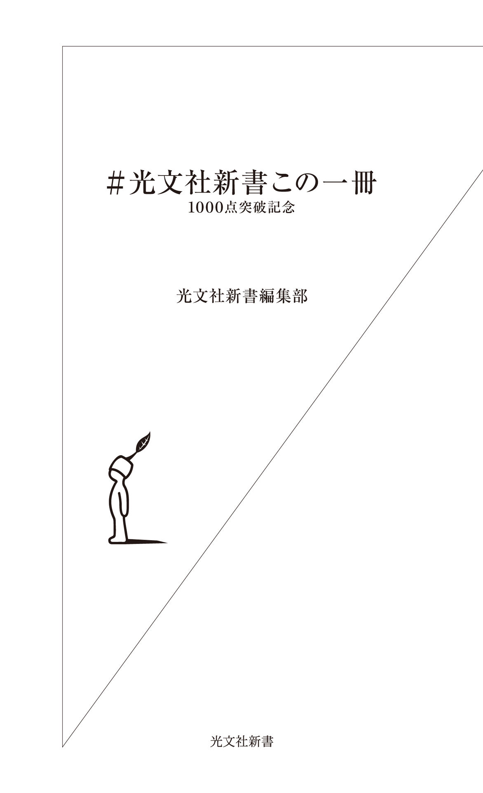
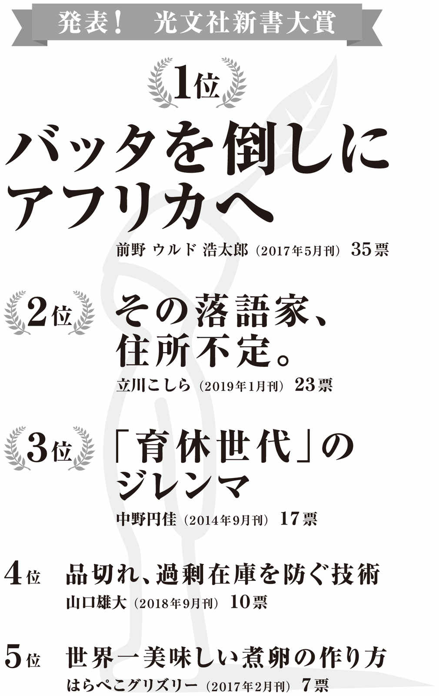
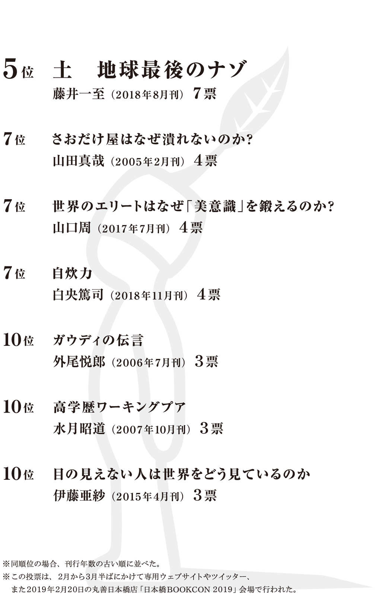
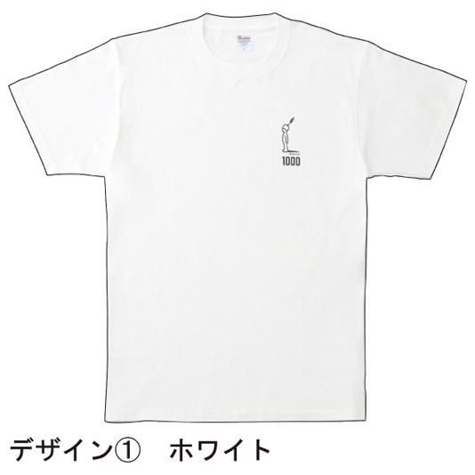
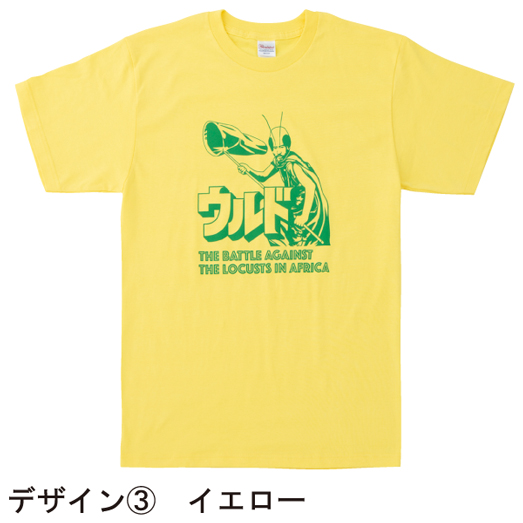

| ＃光文社新書この一冊～1000点突破記念～ | |
| 光文社新書編集部 | |

はじめに
＃ 光文社新書この一冊
四月に光文社新書の刊行点数が一〇〇〇点を突破しました。
芳沢光雄先生の『「％ 」が分からない大学生 日本の数学教育の致命的欠陥』が通巻数で一〇〇〇番目になります。
「知は、現場にある。」を旗印に創刊したのが二〇〇一年一〇月ですから、一七年七カ月での到達です。
思えば九・一一の翌月、まだ世の中が騒然としている中で創刊し、平成最後の月に一〇〇〇点に達しました。偶然ですが、世の中の大きな事象に合わせて節目を迎えるという、時代に寄りそう新書らしいあり方ではないかなと、誠に勝手ながら思っています。
これからも刊行は続きますので、一〇〇〇点といえども一つの通過点に過ぎません。ただ、浮き沈みのある出版業界の中で、よくここまで来られたという感慨は間違いなくあります。これも、光文社新書を支えてくださった多くの方々――著者、読者、取次・書店、印刷・製本会社などなど――のおかげです。この場を借りて、心より感謝申し上げます。どうもありがとうございました。これからもよろしくお願いいたします。
さて、一〇〇〇点突破を記念して編んだこの冊子では、著者・出版関係者、読者の皆さんの「＃ 光文社新書この一冊」を紹介します
著者・出版関係者一〇五名、読者一七五名の方々が、思い思いの「この一冊」を推し、感想を述べてくださっています。
編集部でも、どなたがどういう本を推してくださるのか、ワクワクしながら待っていました。「この方がこれを！」という驚きが多々あり、選書だけでも楽しませていただきました。そのうえで「なるほど！」と唸らされるコメント。光文社新書に関する最良のブックガイドになるはずですので、本冊子をご活用のうえ新たな一冊を手に取っていただければ、編集部一同、これに勝る喜びはありません。
ちなみに、読者の方々の「＃ 光文社新書この一冊」は、二月から三月半ばにかけて、専用ウェブサイトやツイッター、また二〇一九年二月二〇日に丸善日本橋店で行われた「日本橋BOOKCON 2019 」会場で募集しました。投票してくださった方々、どうもありがとうございました。
この投票を集計して、一番得票数の多い一冊を「光文社新書大賞」に選出しました。皆さんの「この一冊」が、大賞に選ばれたでしょうか？
それでは、まず著者・出版関係者の「＃ 光文社新書この一冊」から本冊子は始まります。
〈凡例〉
お名前（※著者・出版関係者編は所属・肩書等が入ります）
推薦書の書名と著者名
推薦コメント
※読者編は、投票時のお名前（ペンネーム）をそのまま掲載しています。
本冊子に掲載されている作品のほとんどは、電子書籍版も発売されています。その場合、紹介ページへのリンクを掲載しています（２０１９年５月現在）。
なお『純米酒を極める』（上原浩）につきましては、光文社新書版の約８年後に一部情報を更新した「知恵の森文庫」版が刊行されました。リンクしている電子書籍版は「知恵の森文庫」版から作成された物になります。ご了承ください。
「＃ 光文社新書この一冊」著者・出版関係者編
青木肇（講談社現代新書編集長）
ルポ 差別と貧困の外国人労働者 安田浩一
ルポのお手本のような作品です。日本の労働現場で搾取される中国人研修生や日系ブラジル人。著者は、彼らの怒る・泣く・笑うといった等身大の姿を描きながら、「なんだ、日本人も外国人も同じじゃないか」という、ごく当たり前だけど忘れがちなことをしっかりと伝えてくれます。文中に、失業中の日系ブラジル人の男性と著者が年末にテレビで紅白歌合戦を見て、フェイジョアーダに舌鼓をうつ場面が出てきますが、この描写がとても印象に残っています。
厚 香苗（大東文化大学文学部准教授）
犬は「びよ」と鳴いていた 山口仲美
「キャッキャッ」という猿の鳴き声の表現は、猿が恐怖心を抱いたときの声の写しで、日本人が猿を見世物にしはじめた室町時代に登場した。それより前の『常陸国風土記』には「ココ」とあって、猿が食べ物を食べている時の満足そうな声の写しである。本書にそう教えられドキッとした。「ココ」という動物の鳴き声から、直ちに猿が連想される未来がやってくることを願う。
阿部真大（甲南大学文学部教授）
商店街はなぜ滅びるのか 新 雅史
戦後日本の安定は新中間層（サラリーマン）と旧中間層（自営業者）によって担われていた。それを「両翼の安定」と呼び、片翼が失われた現代日本＝「サラリーマン社会」の問題を新は指摘する。しかし新は単に旧来の商店街の復活を主張する訳ではない。なぜそれが滅んだのかを知らなくては、私たちは同じ過ちを繰り返しかねない。「新しい商店街」は、その反省の上でのみ可能となるものなのだ。地方創生に関わる人は必読の一冊。
新 雅史（東洋大学非常勤講師）
住宅政策のどこが問題か 平山洋介
私は長らく賃貸暮らしだが、この本を読むと、その選択は誤っていたかと思う。というのも、戦後日本の住宅政策は、持家取得の支援が中心であり、賃貸については何ら支援がなかったからである。だが、その政策は、持家の取得が人生の目標であった時代の名残であり、単身世帯や高齢世帯が増加する平成の社会状況では、明らかな偏りがあった。令和の世が、多様な生き方を支える住宅政策となっているか。それを判断するために、この書を読み継ぐ必要がある。
安城寿子（服飾史家、阪南大学専任講師）
ユダヤ人と近代美術 圀府寺司
美術史だけでなく、ナチス台頭以前のヨーロッパにおけるユダヤ人のありようと彼らに対する差別がどのようなものであったかを知ることができる良書。何度も読み返した。うかつに感想を述べることがためらわれる一冊でもある。
飯田泰之（明治大学政治経済学部准教授）
純米酒を極める 上原浩
大げさに言うと私の人生に、少なくとも飲酒生活にもっとも大きな影響を与えた本である。日本酒党であることはもちろん、「酒は純米、燗ならなお良し」を旨に日々アルコールを摂取している。刊行時には絶滅危惧種であった、こだわりの造り手、酒への愛情ある酒販店・料理店も近年増加してきている。いま始まりつつある「日本酒の再生」に上原浩氏が果たした役割は大きい。日本酒うんちく本として、実践的な日本酒ガイドとして迷わずお勧めできる本である。
飯間浩明（国語辞典編纂者）
辞書と日本語 倉島節尚
国語辞典はどんなふうに作られるんだろう。どんな歴史があるんだろう。どう利用すればいいんだろう。そんな疑問に『大辞林』の元編集長が正面から答えてくれます。国語辞典を知りたい人のための入門書。最近は辞書についての面白い読み物も増えたけど、基本を網羅した、わりあい読みやすい本と言えば、まずは本書でしょう。教科書ふうに感じられる箇所も、飛ばさず読んでほしいな。現在絶版なのを残念に思い、あえて推薦します。
生島淳（スポーツジャーナリスト）
おひとり京都の秋 柏井壽
日本人に生まれ、京都に友だちがいるかいないかでは、人生の豊かさが大きく変わるのでは？ と感じるようになりました。友人たちのおかげでだいぶ楽しませてもらっていますが、『おひとり京都の秋』には完全に脱帽です。いまも残る町の食堂、そして近江へ足を延ばしての案内はかゆいところに手が届いています。世の中には除菌された京都本があふれていますが、この本には程の良い生活感があるだけでなく、京都への批評があります。
池内紀（ドイツ文学者、エッセイスト）
傷はぜったい消毒するな 夏井睦
目からウロコの本だった。以来、消毒薬とおさらば。赤チンよ、さようなら。ガーゼもいらない。傷口を水道で洗って、ティッシュで拭って、キズパッドを貼りつけておく。数日できれいに治っている。「生態系としての皮膚の科学」と副題にあって、現代医学に関する相当高度のことが語られているが、そのあたりは読みとばした気がする。もともと先端医学をあまり信用していない。タイトルの「ぜったい」が秀逸だ。
池上彰（ジャーナリスト）
空気の検閲 田真佐憲
自由な表現を取り締まる検閲。戦前・戦中には検閲があったことは知られているが、その内実はどういうものだったのか。実は思想に対する検閲ばかりでなく、いわゆるエログロについての検閲が厳しかったのだ。ひたすら
池上英洋（美術史家、東京造形大学教授）
大河ドラマ入門 小谷野敦
２０１６年のＮＨＫ大河ドラマ『真田丸』を一家揃って見ていたら、呂宋助左衛門が出てきて、それを松本幸四郎（当時）が演じていて大いに驚き、懐かしくなった。なにしろ助左は１９７８年に放送された『黄金の日日』の主役で、その頃まだ市川染五郎と名乗っていた松本本人が演じていたからだ。著者や私のように、大河ドラマで歴史好きが嵩じた子供は多かろう。そうした記憶を呼び起こしてくれるだけでなく、本書は著作権などのデリケートな問題にも果敢に斬り込んでいる。
石黒圭（日本語学者、国立国語研究所教授）
百まで生きる覚悟 春日キスヨ
人間は自分の姿を客観的に見られない。それは幸せなことであるが、同時に不幸への入り口である。現代の高齢者は、80 歳でも元気な人が多い。しかし、周囲を見ていると、85 歳を大きな分岐点として、ガクッと老けこんでいく。本書は、85 歳前後から始まる要介護期の備えを促すことを目的としている。自らの老いを想像することはしんどいが、生涯の最後を不幸にしないための大事な作業である。読みたくないが、読まねばならない必読の書である。
石戸諭（ジャーナリスト）
犯罪不安社会 浜井浩一 芹沢一也
初めて読んだ時の衝撃は忘れられない。私は毎日新聞入社１年目、駆け出しの事件記者だった。本書の重要なポイントは２点ある。マクロの犯罪統計を読み解き「治安悪化」論を徹底的に批判したこと、浜井の刑務所勤務経験を元にしたミクロの視座を組み合わせたことだ。マクロとミクロを組み合わせることで、事象は立体的に分析できる。私は本書から「方法」を得た。データを持って、現場に入る。今もなお、影響を受け続けている。
石渡嶺司（大学ジャーナリスト）
文章は接続詞で決まる 石黒圭
大学生だとエントリーシート・履歴書。社会人だと業務報告書に企画書。文章を上手に書けても下手でも、文章を書かずに済む、ということはあり得ません。そして、意外と見逃されがちなのが接続詞です。同書は文章の切れ味を出す方法、つまり、接続詞の上手な使い方を紹介しています。国語のうんちく、というよりも、むしろ、接続詞の小辞典として使ってみてはいかがでしょうか。たとえば、手元に置いておくと間違いなく得をします。
市川淳一（丸善ラゾーナ川崎店）
９９・９％ は仮説 竹内薫
新人時代にオリジナル帯で大展開した一冊。みんなが正しいと思っていた事、常識だと思っていた事も実は「ぜんぶ仮説にすぎない」。「飛行機はなぜ飛ぶのか？ 実はよくわかっていない」から始まる、科学に
伊藤公一朗（シカゴ大学助教授）
都市と地方をかきまぜる 高橋博之
現代の大量消費社会において「生産者」と「消費者」が人間的繋がりを持ち、その繋がりに価値を創生する道はないのか。現代社会が抱えるこの大きなテーマに、著者は「都市と地方」を「食」を通じて繋ぐという発想を提起する。語り口に柔らかさと説得力があるのは、著者が机上の論を講じる物書きではなく、「東北食べる通信」や「ポケットマルシェ」といった先駆的ビジネスで問題解決を目指す社会起業家だからではないだろうか。
岩田健太郎（医師、神戸大学教授）
街場のメディア論 内田樹
新書は「情報系」と「オピニオン系」に大別される。前者は知らない知識を教え、後者は著者が意見を表明する。後者で楽しいのは「私とおんなじことを言っている場合」である。が、『街場のメディア論』はオピニオン系だが「こんな考え方したことないぞ〜」と仰天する奇書だ。私が今まで考えていたこととは違う、あれれ〜？ と仰天、「自分が変わる」チャンスとなる。自説に固執し分断社会の進む昨今、「あれれ〜？」な本書は実に貴重。
岩波明（昭和大学附属烏山病院病院長）
アメリカ下層教育現場 林 壮一
著者はアメリカ在住ノンフィクションライター、元々プロボクサーを目指していたという異色の経歴を持つ。恩師に頼まれた彼は臨時の高校教師として、「ＪＡＰＡＮＥＳＥ ＣＵＬＴＵＲＥ」の担当となったが、生徒たちのレベルの低さに愕然とする。その学校は人種差別、貧困、ドラッグ、家族の崩壊と、米国のあらゆる社会問題が濃縮されている場所だったが、著者は果敢にチャレンジを進めていく。振り返って、日本の教育問題の本質を考えさせられる好著である。
内澤旬子（イラストルポライター）
精神障害者をどう裁くか 岩波明
精神障害者が凶悪事件の加害者となり、責任能力が認められず不起訴となるたびに、やりきれない気持ちになる。「心神喪失・心神耗弱」で罪を減免される根拠は何か。彼らはどんな処遇を受けるべきなのか。一般社会からの隔離は人権侵害に当たるのか。タブー視されがちな「触法精神障害者」を巡る問題を、精神科医の立場から、治療や関連法の変遷を踏まえつつ解説。医療観察法をはじめとする現行法でも対応しきれない問題にも言及。誤解や偏見を退け、精神障害を正しく知る一助に。
内田良（名古屋大学准教授）
残業学 中原淳＋パーソル総合研究所
残業をただ断罪して終わるのではなく、そこに陥る個人とそれを引き起こす組織の力学が丁寧に描かれている。教育学に携わる身としては、残業が労働者に「学びのリスク」をもたらしているという点が興味深かった。学ぶ余裕がなければ、労働者はもはや長時間労働の仕組みを理解することさえできない。本書はとても読みやすいので、時間をみつけてぜひ手にとってほしい。中長期的にあなたの人生をきっと豊かなものにしてくれるはずだ。
大澤聡（近畿大学文芸学部准教授）
文章は接続詞で決まる 石黒圭
即戦力の教養。語義矛盾めくが、光文社新書には新書レーベルのなかでもそんな印象がある。学術の高度な専門性と日常生活での即効性とを絶妙なバランスで両立させた作品が多い。本書はその好例。基礎から最先端まで駆けぬけ、その足で実戦に応用できてしまう。ひそかに入試現代文の対策にも。「接続詞」という、文章力を最短で向上させる〝奇蹟のツボ〟の存在を自覚させ、その一点に局限したことに勝因はつきる。良書とはそういうもの。
大澤真幸（社会学者）
宗教の経済思想 保坂俊司
三つの世界宗教（キリスト教、イスラーム教、仏教）と「日本教」のそれぞれが、労働等の経済活動にどのような影響を与えるかについて考察した宗教社会学的な研究。マックス・ヴェーバー以来の大きな問いを継承し、これに果敢に挑戦している。目下継続中の私自身の探究（『〈世界史〉の哲学』）の関心とも重なる部分が多いため、ていねいに読ませていただいた一冊である。
大竹昭子（作家）
できそこないの男たち 福岡伸一
すべての生物の受精卵は雌となるべく発生するが、途中でＳＲＹ遺伝子が入り込むと雄に作り替えられる。男性読者をがっくりさせるような事実だが、本書の神髄はその語り口にこそある。分子生物学者が日々、どういう器具を使い、どんな作業を行っているかが緻密に語られてゆく。科学することも、絵を描いたり会社で働いたりするのと同様、人間の営みなのだという当たり前のことに気づかせる。人間がいて科学があるわけで、その逆ではないということだ。
岡嶋裕史（中央大学国際情報学部教授／学部長補佐）
さおだけ屋はなぜ潰れないのか？ 山田真哉
ずるい。この本はずるい。だって、『さおだけ屋はなぜ潰れないのか？』である。何をどうやっても興味を持ってしまうではないか。暇そうで、儲からなそうで、でもなくなりもしない、あの不思議な商売がなんで成立するのか、気になって気になって結局この本を購入するまで心に平安が訪れなかった。タイトルでハードルを上げるのは著者にとって怖いことなのだが、そこは名手山田真哉氏の手による文章である。買って絶対に損はしない。
岡田尊司（精神科医、作家）
宇宙はなぜブラックホールを造ったのか 谷口義明
精神科医の私がなぜ宇宙論なのか。私は寝る前に睡眠薬代わりに本を読むことにしている。面白すぎない真面目な本がお勧めで、宇宙論はぴったりだ。どんなにストレスを抱えていても、横たわりながら星空、それも宇宙の極まりであるブラックホールの話を読むと、なぜか心が落ち着く。無限遠点から下界を見下ろすように、この世の憂さも霞んでいく。最新の宇宙論によれば、最後は原子さえも死んだ無に行き着くという。何という安らぎ。
小川さやか（文化人類学者）
商店街はなぜ滅びるのか 新 雅史
戦後に商店街という独特の空間が発明され、拡大する歴史的な経緯や衰退の原因となった問題構造を丁寧に解きほぐす。一刀両断的な解決策は提示されない。商店街の再生は簡単じゃない。だからこそ、ＩＣＴを基盤とする新しい経済社会の到来が叫ばれる今、地域の自律性や多業種の共存共栄、近代家族や日本型政治システムといった商店街を支えてきた論理をどのように現代風に刷新するかを改めて考えてみるのがスリリングに思える。
荻上チキ（評論家、編集者）
犯罪不安社会 浜井浩一 芹沢一也
「犯罪が増加している」「少年犯罪が凶悪化している」などといった、科学的根拠を欠いたモラルパニックがどうして起きたのか。犯罪研究の浜井氏が、犯罪統計から犯罪の現状について解説し、社会学者の芹沢氏が、メディアおよび言論人の発言が、いかに不安社会を扇動していったのかを分析していく。その後の「ファクトチェック」「カウンター言論」にもつながる先駆的な一冊。
奥田祥子（近畿大学教授、ジャーナリスト）
百まで生きる覚悟 春日キスヨ
「元気なうちに備えを」という介護者らの声をきっかけに、著者は70 歳代から１００歳間近の高齢者に聞き取りを行った。浮かび上がったのは、大正期生まれの元気な暮らしぶりと、一人暮らしや夫婦二人暮らしが増えている昭和期生まれの備え意識の低さだった。「成りゆき任せ」を招く制度的問題も解き明かしつつ、「身じまい」の法を説く。当事者に真摯に寄り添う姿に感銘を受ける。人生１００年時代を生きるヒントが詰まった一冊。
小熊英二（社会学者、慶應義塾大学教授）
住宅政策のどこが問題か 平山洋介
日本の住宅政策の「持ち家」偏向を、歴史・国際比較・実証調査・理論的分析の諸点から分析した、新書としては決定版的な本。この問題に関心のある人は必読であると同時に、日本社会を根底から規定しているものが何なのかをうかがい知るうえでも重要。
織田淳太郎（ノンフィクション作家）
ただ坐る ネルケ無方
目的志向の生き方は、葛藤と混乱を引き寄せる。著者はその張本人こそ「私（自我）」による捉われであり、それが個人だけでなく社会全体までも軸の欠落した不安定なものにしていると説く。人生とは本来、無目的で「何にもならない」もの、そして「ただ生きる」べきもの。そこに、軸のすわった「今ここ・この自分」が目覚める土壌がある。ドイツ生まれの禅僧が、禅の神髄を通して語る人生訓は、シンプルでありながら、どこか深遠である。
お股ニキ（@omatacom）（素人野球評論家）
世界のエリートはなぜ「美意識」を鍛えるのか？ 山口周
ビジネスの世界において「正解のコモディティ化」が進み、理屈や論理によって誰もが似たような結論に到達して厳しい競争となる昨今の現実世界において、感性を磨く重要性を説いた一冊。野球においても同様の流れが迫っており、データ分析は当然にした上で感性や人間対人間の勝負がより重要になってきている。データ分析をすると、案外と古くからの人間の感性が合っていて、全くバカにならないことに気づかされる。
開沼博（社会学者、立命館大学准教授）
さおだけ屋はなぜ潰れないのか？ 山田真哉
光文社新書と言ったら、と問いかけられて真っ先に思い浮かぶのがこれだ。いや、もっと自分の専門に近いような学術的な本だってあるだろう、というところもあるが、ハッとさせられ知的好奇心を刺激する問いを冠したタイトル、雑学うんちく的な問いの答えにせまりつつ実は会計等社会人にとって役立つ知識を学ぶこともできる内容。いまとなってはむしろ新書市場全体でこういう本も多いかもしれないが、いまでも色々と学ぶきっかけが眠っているうまくできた本だと思う。
柿内芳文（編集者）
藤巻健史の実践・金融マーケット集中講義 藤巻健史
業界のトップにいる人間が、その業界に入ったばかりの新人に授業を行う。もうその構図だけで面白くて役に立つ本ができあがるのは目に見えている。トップは、無名の新人だったかつての自分をイメージしながら「その時知りたかったこと」をぶつける。新人は、自分がその業界で生き抜くために、トップの想いを一滴もこぼさぬよう真剣に耳を傾ける。ああ、こういう授業をもっと「読みたい」。そう思わせる力がこの一冊には確実にある。
香山リカ（精神科医）
宇宙に外側はあるか 松原隆彦
なんて魅力的なタイトル！ 興味はあるけれどシロウトには近寄りがたい宇宙物理学の最新の知識がわかりやすくおもしろく解説されていて、読んでいるうちに夜空の星を見上げた子ども時代のワクワクがよみがえってきた。文学や哲学のテーマとのつながりも感じさせるロマンあふれるこの一冊、子育て中の母親や第一線のビジネスマンたちにこそぜひ読んでもらいたい。きっと心がぐぐっと広がり、小さな悩みなど吹き飛んでしまうだろう。
門倉貴史（エコノミスト）
行動経済学 友野典男
「行動経済学」の草分け的な書籍。「行動経済学」とは、完全に合理的な人間という、従来の経済学の大前提を覆し、時として人間は感情で動くというより現実的な前提に立ち、そうした人間の行動からどのような結果が生まれるのかを研究する経済学。プロスペクト理論やフレーミング効果、最新の神経経済学まで幅広く網羅的に紹介されており、しかも具体例が豊富なので分かりやすい。これ一冊で「行動経済学」のエッセンスが身に付く最適な入門書。
菊地悟（角川新書編集長）
知性を磨く 田坂広志
「若いうちに読みたかった」「学生のうちに読んでおくべき」......。こうした本は
吉川徹（社会学者、大阪大学教授）
認知症の人の心の中はどうなっているのか？ 佐藤眞一
認知症は、親族として向き合うときも、やがて老いゆく自分自身を思うときにも、不安で心をかき乱す。突き詰めればその正体は無理解だ。著者は、コミュニケーション、脳科学、ロボット工学、病理、創薬、介護などの観点から、現代科学の最先端の事実を語っていく。十分なリテラシーをもって認知症の人と接することがいかに大切かを本書は説く。応用的な人間科学の行間に垣間見える、第一人者の温かい思いやりも印象に残る。
倉山満（憲政史家）
「日銀貴族」が国を滅ぼす 上念司
日本の自殺者３万人、日銀総裁白川さん。白川方明日銀総裁時代、日本は大デフレに苦しんでいた。多くの若者が望む仕事に就けず、働き盛りのお父さんたちが自ら死を選ぶ。それでいながら、「お前の努力不足だ。甘えるな」と叩きのめされる。そんな理不尽な風潮に対し、デフレは人災である、日銀の罪は重いと真実を明らかにした。デフレ脱却につながっていく、時代を動かした救国の一冊。
小飼弾（ブロガー、プログラマー）
ニュートン力学が量子力学と相対論の登場により古典となったように、
小木田順子（幻冬舎新書編集長）
さおだけ屋はなぜ潰れないのか？ 山田真哉
新書編集の同業者としては、やはりこの本を挙げたい。会計という正統派のテーマと、キャッチーなタイトルの組合わせ。「入門」を謳いながら難読本が多い教養新書の世界で、本当に分かりやすく工夫された文章。そして、まだ知名度も低かった著者と若い担当編集者が、「このタイトルでなければ出さない」と会社を説得したという「物語」。この本が確立した「新書ベストセラーの条件」は、刊行から20 年近く経っても全く古びていない。
小島毅（東京大学人文社会系研究科教授）
大河ドラマ入門 小谷野敦
ＮＨＫ大河ドラマについて、ひとりの視聴者としての立場からその歴史と個別作品を紹介したもの。「入門」と銘打ってはいるものの分析されている内容はなかなか高度で、すでに観たことがあって予備知識を具えた「通」向きに書かれている。私は同好者として、著者の独断と偏見（失礼！）による作品批評に、「そのとおり」と叫んで共感したり、「それは違うぞ」と突っ込みを入れたりしながら楽しく読ませてもらった。
小林紀晴（写真家）
森山大道 路上スナップのススメ 森山大道 仲本剛
大判の写真集などで写真家・森山大道氏の作品に触れる機会は多いが、新書で気軽に手にできるのが貴重だ。写真はカラーを含め多数掲載されていて、新書のフォーマットでも力強い。森山氏自身の言葉も胸に熱く刺さる。経験から生まれた言葉はどれも説得力をもっている。さらに仲本剛氏が撮影に同行し、その姿を紹介している点が興味深い。なかなか垣間見ることのできない撮影の方法、スタイルに直接触れることができるからだ。
小林哲夫（教育ジャーナリスト）
教育という病 内田良
教育は善のはずである。知識や教養を授け、肉体的かつ精神的成長を促す。ところが、時として教育が病をもたらす、死を招く。その恐ろしさを示し、教育が悪になることを教えてくれた。「２分の１成人式」なる偽善的な儀式で、虐待された児童に「お父さん、ありがとう」とウソをつかせる。運動会の組体操や部活の柔道でデタラメな指導を受け身体をボロボロにされる。教育という美名にひそむ不条理をあぶり出し警鐘を鳴らしてくれた。
近藤雄生（ライター）
できそこないの男たち 福岡伸一
生命の基本仕様は女性であり、それを作りかえて出来上がったのが男性である。それゆえに男の身体には「ところどころに急場しのぎの、不細工な仕上がり具合になっているところがある」。本書が説明するその事実は、自分の身体を見るとはっきりとわかる。その箇所の印象が強烈で、もしかすると他の重要な部分が記憶から抜け落ちてしまっているかもしれないが、10 年近く前にこの本を読んで以来、世界の見え方が少なからず変わった。
斎藤哲也（編集者、ライター）
黒山もこもこ、抜けたら荒野 水無田気流
２００８年の初め、筆名も書名も変な本書を読んで興奮し、やたらと人にすすめまくっていた記憶がある。個人史を語りつつ、そこに時代批評をおりまぜていくスタイルは、さながら等身大の社会学入門という趣きで新鮮だった。躍動感のある文章にもひきこまれた。最近、読み直してみたが、内容はまったく古びていない。それもそのはず。もうすぐ平成が終わるというのに、本書の語る「昭和」の宿題はちっとも片付いていないのだから。
阪上大葉（現代ビジネス編集長）
目の見えない人は世界をどう見ているのか 伊藤亜紗
視覚障害のある方々は何に苦労し、何に幸せを感じているのか。その聞き取りをまとめた本書を読み終えたあと、「見えている」僕らが、「見えない人たち」の世界をまるで見ようとしてこなかったことに気づかされ、呆然とした。僕たちは本当に視野が狭い。でも、その視野を少しでも広げるために本を読む。新書を読む――。本書の登場人物の一人が「偶然の出会い」を楽しむように、これからも良質な新書との偶然の出会いを楽しみたい。
坂爪真吾（一般社団法人ホワイトハンズ代表）
お金は銀行に預けるな 勝間和代
人目を引くキャッチーなタイトルで、金融リテラシーを身につけるために必要な知識と実践方法を分かりやすく解説した良書。金融に関する予備知識ゼロからでも理解できる内容で、投資の基本を学ぶことができる。本書のヒットにより、勝間和代氏は一躍時の人になった。新書の持っている三つの力＝「読者を育てる力」「著者を育てる力」「時代の空気を変える力」を体現した、まさに「ザ・光文社新書」と呼ぶべき一冊。
佐々木紀彦（ニューズピックスＣＣＯ）
若者はなぜ３年で辞めるのか？ 城 繁幸
日本の〝おじさん優位な労働市場〟に対して、若者視点から問題提起したエポックメイキングな一冊。「昭和型雇用システムの終わり」はこの本から始まったようにも思う。著者の城繁幸さんを交えて、飲みながら語り合った日々がとても懐かしい。ただし、本書出版から12 年超たった今も、日本の雇用システムは十分にアップデートされていない。ポスト平成の時代には、もっと自由かつ幸せに働ける人たちが一人でも多く増えてほしい。
佐藤健太郎（サイエンスライター）
ドキュメント 宇宙飛行士選抜試験 大鐘良一 小原健右
宇宙とはどんなところだろうか、行ったらどんな気分だろうか――と、考えたことのない者はいるまい。しかし宇宙飛行士とは、この世で最も「就職」することが難しい職業だ。本書は、その宇宙飛行士の選抜過程を追った貴重なドキュメント。そこに必要な資質は、図抜けた頭脳でも身体能力でもなく、総合的な「人間力」だという。課せられる意外で過酷な試験の数々、文字通り人生の全てを賭けて挑む候補者たち、全てが圧巻の一冊。
佐藤俊樹（社会学者、東京大学教授）
アンダースロー論 渡辺俊介
新書のレーベルは投球に似ている。老舗の二つが４シームだとすれば、光文社の持ち味は手元で鋭く曲がるムービングボールだと思う。野球関連でも、織田淳太郎さんの『捕手論』から高津臣吾さんの『二軍監督の仕事』まで、オンリーワンの切れ味を感じさせるが、なかでも特に好きなのがこの一冊。日本プロ野球界で、文字通りオンリーワンの道を歩むことになった著者の、著者ならではのアンダースロー論は深く、鋭く、知的で、かつ熱い。
下川裕治（旅行作家）
タリバン 田中宇
タリバン関連の書籍は僕の書棚に何冊かある。いまでも、読み物兼資料として開く機会が多いのが『タリバン』（田中宇著）だ。新書というと、数年で状況が変わり、風化していってしまう内容が少なくない。しかし『タリバン』はいまだ僕にとっての良質なテキスト。パキスタンとアフガニスタンを地政学的に見た部分は秀逸で、いまだ色褪せていない。光文社新書創刊の10 冊のなかの１冊だったことに今回気づいた。
下地ローレンス吉孝（社会学者）
ルポ 差別と貧困の外国人労働者 安田浩一
２０１９年４月に施行された外国人受入制度は、既存の技能実習の合法的な延長制度だと指摘されている。技能実習制度は深刻な問題を抱えてきたが、本書はそれらを明らかにする渾身のルポだ。最低賃金以下の労働、パスポートの没収と強制送還、暴力的な労働環境、派遣切り...かれらの現実の姿から浮かび上がるのは、「日本社会のあり方」そのものだ。新制度が始まるこの時節に、日本社会に生きる誰もが本書の内容に耳を傾けてほしい。
城 繁幸（株式会社Joe' s Labo代表）
医者の稼ぎ方 筒井冨美
医師不足による医療崩壊や、医大入試における女性差別問題を耳にするたび、我々は医療内部で何か異変が起きていることは直感しつつも、それがどういったメカニズムであるのかまではなかなか理解できません。本書はあくまで読みやすく、時にユーモアも交えつつ、医療界の抱える構造的課題を明示してくれる良書です。子供を医者にしたいという親御さんはもちろん、日本にとって本当に必要な構造改革とは何かを理解するうえでも、お薦めの入門書と言えるでしょう。
辛酸なめ子（漫画家、エッセイスト）
名画で読み解く ハプスブルク家12 の物語 中野京子
ロイヤルファミリーの動向はＳＮＳなどでもチェックできる現代ですが、ただ消費されていく写真と違い、一枚の絵の持つ重みや物語性に驚かされます。中野京子氏の怜悧で知的な文体で、ハプスブルク家の登場人物たちが脳内で動き出し、その華麗で悲惨な一生から目を離すことができません。高貴な青い血を守り続けた一族は、平凡な幸せなどとは無縁の存在。羨望と同情が入り交じる不思議な読後感に浸りました。
鈴木涼美（作家、社会学者）
フランス人の性 プラド夏樹
米の半ば暴力的な「#MeToo 」運動の盛り上がりと、それを疑いなく模倣する日本のフェミニズムに懐疑的でも、国内で聞こえるおじさま方の力無い愚痴と小声の反論は聞くに値しない。仏で子育てを経験した筆者が、性教育、キリスト教文化、セックスレスや不倫、そして男女平等の議論がなぜ仏で流行しないのかについて歴史的な分析に自身の経験を織り交ぜて切り込んだ本書は、とてもフェアな立場からそんな風潮への正当なアンチテーゼを投げかける。
芹沢一也（株式会社シノドス代表取締役）
アベノミクスのゆくえ 片岡剛士
本書は、現在進行形のアベノミクスの本質を理解するために役立つばかりでなく、後にアベノミクスが歴史的に評価される際に高い資料的な価値をもつであろうと思います。データにもとづく精緻な分析に裏打ちされたこの水準の内容を、平易な新書で読めることも驚きです。光文社新書の懐の深さを伝える一冊です。
髙橋秀実（ノンフィクション作家）
人体 失敗の進化史 遠藤秀紀
動物の遺体解剖にひたすら取り組んできた著者による斬新な進化論。まさに「手触り」で進化の道筋を解き明かしてくれます。心臓、肺、耳、手、足......。私たちの体のパーツがいかにして形づくられてきたのか。読んでいると体全体がバラバラにされ、やがては溶け出していく感覚に襲われます。著者曰く、人体は「設計変更」を繰り返した「継ぎ接ぎだらけの部品」で構成される「失敗作」。「哀しいモンスター」という警鐘も身に沁みます。
橘 玲（作家）
「その日暮らし」の人類学 小川さやか
模造品やコピー商品は当たり前でも、「違法」と「不道徳」は区別する。「殺到する経済」と呼ばれる、新興国の零細商人たちの謎のビジネスには合理的な理由があった。アフリカ・タンザニアの地方都市を足掛け15 年かけて調査した文化人類学者が、グローバル資本主義の裏側にある、「今日のために明日を犠牲にする」ダイナミックでその場かぎりの経済行動を魅力的に描いた。
田中正敏（中公新書編集部部長）
若者はなぜ３年で辞めるのか？ 城 繁幸
三浦展さんが言うところの「真性団塊ジュニア」世代である私（１９７７年生まれ）にとって、光文社新書はその苦しい歩みの傍に寄り添ってくれたレーベルという印象です。なかでも年功序列や「昭和的価値観」の弊害を鋭く指摘した本書は、刊行時まだ20 代だった自分の胸に響きました。刊行から13 年。私も週の半分は保育園のお迎えを担当して時代の変化を感じる一方、20 代が激減した出版業界を眺めると、事態は深刻化しているとも感じます。
山良雄（本屋「Title」店主）
目の見えない人は世界をどう見ているのか 伊藤亜紗
道行く人と同じ時代に生きていながら、わたしたちはいつの間にか分断され、〈共に生きる〉実感が掴めない。「隣の違う人になって、世界を見ることはできないだろうか」。個人の好奇心から端を発した研究は、生きたことば（いま、必要なことば）により、わかりやすく読み進められる。視覚障害者の世界は、見える人のそれとは当然異なるが、違いを違いとしたまま、そこに想像力を働かせることはとても楽しい。
筒井淳也（立命館大学産業社会学部教授）
日本の分断 吉川徹
日本の「計量モノグラフ」の第一人者、吉川徹先生が、堅実かつ軽快に、日本社会に存在する分断を主題に論じています。キーワードは「学歴」。仕事、家族、住む場所、そして心の中身までに浸透した学歴という分断線を描き出すことに成功しています。「大卒層だけをみている社会」という著者の警句を、そして格差のみならず「分断」という言葉の持つ重みを、あらためて私たちは受け止めるべきでしょう。
常見陽平（千葉商科大学国際教養学部専任講師）
リーダーシップの旅 野田智義 金井壽宏
著者デビュー直前に読んだ本。「ルビコン川を渡る」勇気が湧いてくる。リーダーシップ論の傑作。ＮＰＯ代表と経営学者による、理論と実践をほど良いバランスで行き来する往復書簡形式は、知的刺激と高揚感に満ちている。高度な知識、深い教養、多様な経験が惜しげもなく披露される。読み終えた瞬間、読者は必ず前へと進みたくなるだろう。キャッチーかつ深く、読者を変え、社会さえも動かす可能性を秘めた、実に光文社新書らしい一冊。
出口治明（立命館アジア太平洋大学〈ＡＰＵ〉学長）
天皇と儒教思想 小島毅
今年は天皇陛下が退位される。この大きな節目の年に天皇制の根源を考えてみるのは時宜にかなっている。本書は天皇制を支える骨組を紐解いたものだ。日本という国号や天皇という称号は、８世紀に中国と対峙する中で中国（儒教）を模倣して創出された。明治維新の後で産み出された近代の天皇制、それを支える祭祀や儀礼といった装置は実は維新期に新しく始まったものが多い。そして、それらもまた儒教を思想資源としていたのである。
中川淳一郎（ネットニュース編集者）
４‐２‐３‐１ 杉山茂樹
まったくもってサッカー好き以外にはワケの分からないタイトルを書名にする点、見事なマーケティングだったと思います。仮に同書が「サッカーはフォーメーションが９割」だったら「はぁ？」ですが、「３‐４‐３」でもなく「４‐２‐３‐１」が素晴らしい。
中沢孝夫（福井県立大学名誉教授）
君の働き方に未来はあるか？ 大内伸哉
〝よくない〟ことを否定しても、〝よいこと〟が生ずるわけではない。雇用慣行などもその典型だ。個人も法人も「人」である限りにおいて能力格差は必ずある。大内伸哉の『君の働き方に未来はあるか？』は、「雇われる」ことの意味を解きながら、労働法の意義と限界、そして自己決定の大切さを明瞭に描いた本である。それは〝法による格差の否定〟は必ずしも良い結果をもたらさない、という冷厳な事実の指摘でもある。
永沼浩一（岩波新書編集長）
ユダヤ人と近代美術 圀府寺司
創刊１０００点突破、おめでとうございます。光文社新書といえば『さおだ□屋は...』『下◯社◯』『データ分△ △ 力』『バッ◎を倒◎に...』などが即座に思い浮かびます。けれども、きわめて少数票、ひょっとすると私だけかもしれませんが、あえて逆張りでこの本に１票を。カッパ・ブックス以来のベストセラーＤＮＡを受け継ぐ光文社新書の「突然変異」。瞠目の一冊です。
中野京子（作家、独文学者）
バッタを倒しにアフリカへ 前野 ウルド 浩太郎
突拍子もない表紙にまず一目惚れ。予想をはるかに上回る面白さで一気読み。著者は「アフリカの砂漠でバッタの大群に襲われたい」との変てこな夢と、現地で研究成果をあげて不安定なポスドクの身分から抜け出したいとの現実的な夢を抱き、モーリタニアへ飛びます。涙と笑いの末ようやくバッタ襲来に遭遇......どうしたかは本書でお確かめください。最後は就職先も決まり、心おきなく虫害研究に没頭できる身となって実に爽やかな読後感。
中野円佳（ジャーナリスト）
「家事のしすぎ」が日本を滅ぼす 佐光紀子
２０１７年春、私は夫の転勤に帯同し「ほぼ専業主婦」生活を送り始めた。そこで目の当たりにしたのが、日本人の駐在妻の皆さんの驚愕の家事力。ちょっとレベル高すぎません...？ と思っていた矢先、佐光紀子さんの著書が出て、タイトルだけで大いに共感してしまった。修士論文とご自身の経験を生かした問題提起で、寒い時期の年末大掃除は「愚の骨頂」、まずい料理に作り手が謝るのは日本だけ？ など目からうろこの視点を提示してくれる。
仲村清司（作家）
京都人は変わらない 村田吉弘
京都の料亭「菊乃井」の主人、村田吉弘氏いわく、荒稼ぎせず町衆と長く付き合うのが京都商人の鉄則。それゆえバブル崩壊後も京都の料亭はつぶれなかったとの指摘は説得力がある。とはいえ、「いけず」などの陰口がついてまわるのも京都。だがその点も京都の歴史から正当な理由を導き出している。秀逸なのは「京都人から見た東京」の項。辛辣ながら含蓄があり、「ものが分かってへん東京人」には刺激的。隠し味絶妙にして旨味たっぷりの京都入門書。
中原淳（立教大学経営学部教授）
仕事で「一皮むける」 金井壽宏
ＯＪＴが機能不全に陥り、職場の人材育成力が急速に低下したといわれる１９９０年代。彗星のようにあらわれた人材育成の新たな考え方が「経験から学ぶ」というアイデアでした。モーガン・マッコールらのリーダーシップ研究に発想を得ながら、「経験から学ぶ」というアイデアを広めた歴史に残る好著だと思います。
長山靖生（評論家、歯学博士）
現代思想のパフォーマンス 難波江和英 内田樹
難解で知られる現代思想の、分かりやす過ぎてスリリングな入門書。扱われるのはソシュール、バルト、フーコー、レヴィ＝ストロース、ラカン、サイードの六人で、それぞれ案内編、解説編、実践編からなる。この本は、私たちの日頃から知りたいと思っていた問題に解答を与えてくれるものというより、意識下の、分かっていると思い込んで棚上げにしていた前提について考えさせてくれる。思想家と著者を通して、自分の思考の癖を見直したい。
南陀楼綾繁（ライター、編集者）
商店街はなぜ滅びるのか 新 雅史
いわゆるシャッター商店街が各地で増加しているが、その対策は容易ではない。本書は商店街の「古さ」や「伝統」が20
世紀になって人為的に創られたものであることを明らかにし、その隆盛から崩壊までを論じるものだ。豊富な事例が挙げられており、極めて説得力がある。両親が営む商店を継がなかった著者の
野上 元（筑波大学人文社会系准教授）
古市くん、社会学を学び直しなさい!! 古市憲寿
著者はテレビに出て、よく「炎上」もしている人物。社会学者を名乗っているけれども、同業者からの評判も良いとはいえない。それを逆手に取り、書物のタイトルにしたところが秀逸。理系の科学にサイエンスジャーナリストがいるのと同じく、文系の学問にも同じような立場の人がいてもいいのではないか。そのときに重要なのは、分からないことを自ら認める姿勢で、この本は、彼のキャラと新書の特性を生かした一つのモデルケースになると思う。
橋爪大三郎（社会学者、東京工業大学名誉教授）
希望難民ご一行様 古市憲寿
世界一周のピースボートを舞台に、若者の「現代的不幸」を掘り下げている。著者は古市憲寿氏。修士論文のテーマをピースボートに決め、参与観察で乗り込んだ。船中で二度もアンケート調査をし、下船後も追跡調査をするなど、けっこう本格的である。世界や平和を追求するはずが、承認の共同体ができて、自分探しにもあきらめがつく。著者も若者なのに絶妙な距離感で、目の前の現象をさばいていく。生まれついての社会学者だ。
林 壮一（ノンフィクション作家）
残念な教員 林 純次
私立中高一貫校の現役教師が、教育界の矛盾や問題点を炙り出した１冊。敢えて述べるなら、「身内批判」、あるいは「内部告発」でもある為、多くの敵を作ったに違いない。それでも、目の前にいる子供たちを守ろうと立ち上がった姿が清々しい。「こんな教師に我が子を任せていられない」と悩む父兄は日本全国に数え切れないほど存する。嘆く親たちに微かな希望を感じさせる作品だ。
速水健朗（編集者、ライター）
４‐２‐３‐１ 杉山茂樹
サッカーのフォーメーション表記が、以前の３列表記からいつしか４列表記が当たり前になった。「え、いつからそれが当たり前になったの？」という漠然とした疑問に真正面から応える内容及び題名。この題名で本が並んでいるのを見たときは本当に驚いた。微妙に世の中の隅だけど、すごく気になっていた部分に光を当てたいい企画。新書って、つまりこういうことなんだというのを示してくれた。
東ゆみこ（文化研究者）
論より詭弁 香西秀信
人が新書を買う理由はさまざまであるが、私にとって外せないのは、アクチュアリティがあるかないかという点である。本書は、レトリックの専門家によって、正しそうなことにだまされず、誤りでありそうなことを安易に排除しない、ネット社会でも役立つ思考術、リテラシーが語られていて有益である。著者の毒気をかわしながら読み進めるうちに、言葉の魔力の正体が見抜けるようになったと感じる時が来るであろう。
藤井誠二（ノンフィクションライター）
アスペルガー症候群の難題 井出草平
アスペルガー症候群と少年犯罪の関係性について多角的かつタブーなく論述した一冊。議論の俎上にほとんど上がることがなかったこの領域を社会的視点から論じた類書はない上、同症候群についての理解や対応も丁寧に書かれている。私は愛知県豊川市で起きた同症候群と診断された少年が老女を殺害した事件を『人を殺してみたかった』というノンフィクションにまとめたが、拙著に対する一つの「返答」だとＳＮＳ上で筆者本人からもらったことが忘れられない。
古市憲寿（社会学者、作家）
吃音の世界 菊池良和
思うように言葉が出てこないことがあります。「どもり」、いわゆる（軽い）吃音です。『とくダネ！』の小倉智昭さんも、実は吃音。今でもプライベートでは言葉につまることがあるそうです。この本では、そんな「吃音」について、治療の歴史から最新の研究までがコンパクトに網羅されています。専門知識をわかりやすく伝えるという、新書のお手本のような一冊だと思いました。
ブレイディみかこ（ライター、コラムニスト）
バッタを倒しにアフリカへ 前野 ウルド 浩太郎
まず表紙に負ける。それから中身に負けて、書き手の人柄に負ける（って、もちろん文章から想像するだけの人柄だけど、著者のキャラが何よりも前に突き出して来ている点が従来の新書とは違うと思った）。これだけエンターテイニングで笑えて泣かせるのに、ちゃんと知的好奇心をそそって、学問や研究に関心を持つ人々が増えそうなところもすごい。新書の未来を切り開く無敵の一冊でしょう。
星野貴彦（プレジデントオンライン編集長）
商店街はなぜ滅びるのか 新 雅史
タイトルに「なぜ」を入れるのは、ウェブニュースの定石だ。光文社新書はその元祖であり、本書も一翼を担う。しかも本書の「なぜ」は、筆者の魂の叫びである。本書によれば商店街は「恥知らずの圧力集団」だ。酒屋の長男という筆者は、他方で実家の商売を疎んじ、会社員と主婦の家庭だけを「中流」と考えてきた自身を振り返りもする。本書は「なぜ自分は中流ではないのだ」という自問に答える。ぜひ「あとがき」から読んでほしい。
本田由紀（社会学者、東京大学教授）
日本の分断 吉川徹
90 年代以降、大学進学率は急激に上昇した。社会の中で権力・財力・発言力を握りがちなのも大卒者である。その陰で、大学に進学しない若者の実情には目が向けられにくい。本書は、大卒と非大卒の分断に加え、若年世代か壮年以上の世代か、そして男性か女性かによる分断線が、黒々と人々を切り分けている現状を、２×２×２＝８つのグループ別の分析により明確に描き出している。日本社会の基本的な「かたち」を知るうえで有益な書。
本間浩輔（ヤフー株式会社 常務執行役員）
リフレクティブ・マネジャー 中原淳 金井壽宏
光文社新書の人事組織モノ。なかでも、憧れの２人が議論を進めるこのシリーズは、今でも読み直すし同僚に勧める頻度も高い。とりわけ『リフレクティブ・マネジャー』は、当時新進気鋭の研究者であった中原淳氏と大御所の金井壽宏氏による夢のような対談で、その内容は全く色あせていないし、フィードバックやプレイングマネジャーなど、現在のキイワードも登場する。マネジャーだけでなく全ての働く人にお薦めする。
前野 ウルド 浩太郎（国際農研研究員）
辞書を編む 飯間浩明
新書を読んで思うこと。与えられた知識よりも自分で気づき、感じたほうが心に残る。「感じ」が多い代表とも言えるのが『辞書を編む』。国語辞典作りを通し、著者の心構えやこだわりを知り、プロとして仕事をすることの楽しさと難しさを感じた。おまけに、生活で触れる言葉の一つ一つが気になるようになり、なにげない時間が特別な時間に変わった。Ｐ．Ｓ．飯間さんが一字一句厳選し、巧みに編んだ文章にもウットリしました。
松田忠徳（温泉学者）
水素分子はかなりすごい 深井有
がん、脳卒中、糖尿病、認知症などは酸化ストレスが要因と言われる。最近、この酸化ストレスを抑制する抗酸化物質として水素分子が脚光を浴びており、その生理作用と医療応用の可能性には目を見張るものがある。一方で、怪しげな水素水に惑わされるケースも相次ぐ。本書は水素全般に関する基礎知識を提供する易しい教科書。「原始生命のエネルギーは水素だった。その記憶はヒトの体内に残っているに違いない」と著者は言う。〝身近な水素〟を健康寿命の延伸に応用できれば凄いことだ。
松永和紀（科学ジャーナリスト）
土 地球最後のナゾ 藤井一至
国立研究法人で土を研究する筆者が、世界の12 種類の土壌を訪ね、掘り、土壌がその地の農業と経済、文明をも形作ってきたことを語る。歴史や化学性、地形や雨、気温との関係が軽妙な筆致で説明され、研究の苦労と喜びが伝わってくる。カラー写真や説明図も豊富で美しく、だれもが世界の土壌の大きな違いに驚くだろう。足元の地味な存在であるはずの土こそが、将来の地球に住む１００億人を養うカギとなることが見えてくる。
松原隆彦（高エネルギー加速器研究機構教授）
名画で読み解く ハプスブルク家12 の物語 中野京子
読者にとって宇宙のことを考えるのは仕事の息抜きになるかもしれないが、宇宙の研究者である私にとっては、宇宙以外のことを考えるのが仕事の息抜きだ。そんな中でふと手に取ったのが本書だった。華やかなヨーロッパ貴族の雰囲気を
松本健太郎（作家）
データ分析の力 因果関係に迫る思考法 伊藤公一朗
難しい話を難しいまま説明する人は多いけれど、ここまで易しく解説された伊藤先生には脱帽です！ １．プログラムを書いたり、数式を使ったりせず、平易な言葉だけで分かりやすく解説されているので文系でも「なるほど感」がある。２．豊富な実例が掲載されていて、データサイエンスが分からなくても「そういうことか」と腹オチする。「因果関係分析」の枠に留まらず、データサイエンスの入門書としても最適な１冊です。
丸山ゴンザレス（ジャーナリスト）
ドキュメント 宇宙飛行士選抜試験 大鐘良一 小原健右
パスポートがあれば世界中どこでも旅できる現代に、選ばれた者しか行けない場所があるとすれば宇宙である。私にとって宇宙はずっと憧れている旅先である。そこに行くことを許された人たちは、どんな関門をくぐり抜けていったのか。彼らの宇宙にかける思い、圧倒的な試験の難易度、そしてロマンが本書には詰まっている。読む人に「この試験に挑戦してみたかった」と勇気を与えてくれたり、読後には感動で胸が打ち震える秀逸な一冊となっている。
三砂ちづる（疫学者、津田塾大学教授）
炭水化物が人類を滅ぼす 夏井睦
自らの人生に影響を与えた、という意味でも、既存の科学の枠組みを大きく問い直すような本に出会えた、という意味でも、この本しかない。「湿潤治療」だけで十分な革命児だった著者は、「糖質制限」を携え、いよいよ医学と科学の根幹に迫ってゆくのだ。むやみな炭水化物摂取の危険性に気付かされたことで、私の体はむくみが取れ、軽くなり、爽やかになった。炭水化物は人類にとって悪魔か救世主か。スリリングな、忘れがたい一冊。
水月昭道（環境心理学者）
子供の「脳」は肌にある 山口創
肌は人体で最大の臓器だとか。その上そこへの刺激はほぼそのまま脳へ伝わるそうだ。だから優しいタッチがそのまま「安らぎ」の感覚となる。子どもは脳ではなく肌を通して安心を得るのだ。大人とて同じと筆者は言う。夫婦円満の秘訣はなでなでにありと。肌こそが安心や信頼を醸成する。肌があう・あわないという直感は正しいのだ。ふと表紙の指先に意識が向く。カバーも紙もさらさら。肌触りのよい本に包まれた論旨が実に心地よい。
水無田気流（詩人、社会学者）
結婚と家族のこれから 筒井淳也
「結婚」と「家族」のかたちは、どのような経緯を辿り、今後どのようになり得るのか。古代から現代まで至る「結婚・家族・生活基盤の維持」の関係を概観し、今日推奨される男女平等な「共働き社会」を目指す際に陥る課題を検証。「経済格差」「無償労働負担」「少子高齢化」等の阻害要因との関係を目配りしつつ、今後社会に訪れ得る家族と仕事の関係性の変容を、リスクも含め省察。初学者から専門家まで分かりやすく、かつ多角的な視座を提供してくれる良書。
宮下規久朗（美術史家、神戸大学教授）
破天 山際素男
二段組６００頁、新書の枠を超えた大著。佐々井秀嶺という一介の僧侶が、想像を絶する苦闘の末にインド仏教界の頂点に立つまでの壮大なドラマを一気に読ませる。ヒンドゥー教とイスラム教が多数を占める現代インドで仏教はもっぱら最下層の不可触民に受容されたが、そこにかくもパワフルな日本人の超人的な活動があったとは。現代のインドや仏教について考える上で貴重であるばかりか、これほどの大著が新書で読めること自体が驚異だ。
三好範英（読売新聞編集委員）
データ分析の力 因果関係に迫る思考法 伊藤公一朗
噛んで含めるような説明でとにかく読みやすい。統計学などに無知な読者にもスッと分からせるように書く手腕は見事。私は国際報道記者で、販売戦略や政策立案に直接携わったことはない。ただ例えば「移民・難民の増大が右派政党台頭をもたらした」といった報道をする際、本書を読むとそう軽率には書けない、と痛感させられる。もっとも、まさに森羅万象で、社会事象の変数は無限だから、因果関係を本当に証明できる事象は限られているのだろうが。
茂木健一郎（脳科学者）
地上最大の行事 万国博覧会 堺屋太一
１９７０年の大阪万博を実現させた、堺屋太一さんによる迫真のドキュメント。「戦後最大の外交的勝利」と評された招致プロセス。「一〇〇万坪を、一〇〇日で買え！」といった言葉から伝わる当時の熱気。岡本太郎氏と丹下健三氏の取っ組み合いの喧嘩、「万国博覧会は過去のもの」と主張したマクルーハンとの論争などの貴重な証言。「『偉くない人』が
森 健（ジャーナリスト）
下流社会 三浦展
非正規雇用が増え、格差問題が広がりだした時期に刊行された。当時、私鉄の車内で、本書で言う「ギャル系」の若い女性が食い入るように本書を読んでいた。著者も述べるように、本書は「統計学的有意性に乏し」く、「多くは仮説」である。だが、所得をはじめ、働く意欲、消費意欲など多面的に意欲が低い階層が出てきたという指摘は社会の変化を見事に捉えていた。大胆な切り口で社会を発見する光文社新書のよさが出てきた一冊。
安田浩一（ジャーナリスト）
ルポ 不法移民とトランプの闘い 田原徳容
世界中が排他の空気に満ちている。差別と偏見が煽られる。移民は敵だと「愛国者」が叫ぶ。米国はその最前線だ。「America First 」の国づくりを目指す大統領は国境に巨大な壁をつくった。本書は、そうした「排除の現場」から「排除される側」の視点を通して米国の〝いま〟を描く。足を使い、言葉を受け止める著者の力量に感嘆した。米国の苦渋と矛盾は、そのまま日本をも照射する。移民をめぐる問題は、けっして他人ごとではない。渾身のノンフィクションだ。
安田洋祐（大阪大学経済学部准教授）
データ分析の力 因果関係に迫る思考法 伊藤公一朗
データを調べていると、異なる事柄の間に何らかの関係性が見出せることが少なくありません。その際に、片方が原因でもう一方がその結果である、つまり因果関係の有無を立証できるかどうかが、データをビジネスや政策決定に役立てる上で最も重要なポイントになります。本書は、気鋭の研究者が因果関係の見抜き方を分かりやすく解説した、画期的な入門書です。デジタル時代に必須の「データ分析の力」の凄さをぜひ実感して下さい！
山口周（独立研究者、著作家）
目の見えない人は世界をどう見ているのか 伊藤亜紗
「見えない人」は「見える人」から「見るという能力」を除いただけの存在ではない。彼らは晴眼者とは全く別の認知・認識能力を持った存在です。私たちは当たり前のように「見る」という言葉を使いますが、そもそも「見る」とはどういうことなのか？ 本書を読むとあらためて考えさせられます。気軽な読み物に思えるタイトルですが、実は読んだ前後で世界の見方が変わってしまう。この本は実は認知論・認識論に関する哲学書なのです。
山田昌弘（社会学者、中央大学教授）
日本の分断 吉川徹
「平成は一億総中流の中、バブル経済で始まり、格差社会を経て、分断で終わる」、平成30 年を振り返ってというコメントを求められた時、そう答えている。吉川さんは、日本が学歴、世代、性別によって分断されている状況を、学術的調査結果に基づいて、丁寧で分かりやすい文章で解説している。次の時代は、ここから始まると感じた。
山本博文（東京大学史料編纂所教授）
テニスプロはつらいよ 井山夏生
「テニスジャーナル」元編集長が、プロテニスプレーヤーが生きる過酷な世界を描いたもの。たった一本のミスが人生を変えることもあること、絶対に勝たなくてはいけない試合があること、など、豊富な実例とともに説得的に語られる。テニスプロの世界が超格差社会であり、実力のわずかな差が大きなランキング差になること、そうした世界でテニスプロが何をモチベーションに戦っているかがよくわかる。
湯浅誠（社会活動家）
２円で刑務所、５億で執行猶予 浜井浩一
「刑務所に入るのは重罪を犯した人」という常識を覆してくれる本。刑務所になぜ高齢者があふれているのか、なぜ生活困窮者があふれているのか、理由がわかる。現場と理論・データの両方がわかる著者の筆致は説得力バツグンで、一気に読んでしまった。刑事問題に関心のある方はもちろん、福祉関係者や社会の問題をじっくり考えてみたい人にオススメ。
吉井仁実（ギャラリスト）
アート×テクノロジーの時代 宮津大輔
現代アートコレクターである宮津大輔が、コレクターとしての視点で未来のアーティスト、アートのカタチをわかりやすく解説。テクノロジー・アートで社会を変えることができるのか、どんな新しいアイデアを生みだすことができるのか、その未知なる可能性がこの本には秘められています。テクノロジー・アートを身近にもっと楽しむために、アート愛好家はもとより、ビジネスマンの未来を考えるヒントとして指南書になることは間違いない一冊です。
好井裕明（日本大学文理学部教授）
昆虫はすごい 丸山宗利
もともと私は昆虫好きでしたが、この本を読み、昆虫の世界の奥深さに圧倒されました。昆虫が人類よりもはるか昔からの地球の住人であることもこの本を読み、改めて腑に落ちましたし、人間社会がもっている多様な豊かさやどうしようもない醜さもまた、すでに昆虫の世界で「あたりまえ」にみられることも「目からうろこ」でした。専門の社会学調査研究に少しくたびれたとき、新たな元気とアイデアをもらえる一冊ですね。
輪島裕介（大阪大学大学院文学研究科准教授）
「その日暮らし」の人類学 小川さやか
経済・グローバリゼーションと人の移動・テクノロジーといった、現代の人類学の先端的なトピックをふんだんに盛り込みながら、「異文化」のありようを魅力的に描くことで「自文化」のありかたを反省的に再考させる、という、人類学の古典的な美点を完璧にアップデートしている。大胆で挑発的で、野放図にも自堕落にさえみえながら、ある局面ではかぎりなく細心、俊敏、周到。同書の主題が見事に体現された文章にも脱帽する。
「＃ 光文社新書この一冊」読者編
秋元真澄
その落語家、住所不定。 立川こしら
人として、落語家として、他人とは全く違う生き方。感銘を受けました。真似は出来ないけど、人の幸せは人それぞれ。素敵な生き方。
ａｇｕｓａｋ
高学歴ワーキングプア 水月昭道
大学院生を中心とした、高学歴ながら苦しい生活に陥る人たちやそのメカニズムについて丁寧に描いている。大学院に限らず、現代社会において学歴を積むことがどのような意味を持つのか考えさせてくれる。
あさくら＠ 読書垢
バッタを倒しにアフリカへ 前野 ウルド 浩太郎
大量のバッタ発生で深刻な農被害に悩むアフリカに、昆虫学者が乗り込むノンフィクションです。空を埋め尽くすバッタの写真は、絶対テレビでは流せない。推しのバッタに人生を捧げる熱量、圧倒されました。
Ａｚｉｍｏｎｇ
自炊力 白央篤司
本当に自炊が必要な人たちに向けた、料理のハードルを下げてくれる珠玉の作品。食べることに関して、どうすればいいかわからない人たち、とかく不要なプレッシャーを背負いこみがちな人たちにも強く響く内容でした。
あのころのオチケン
その落語家、住所不定。 立川こしら
これまでの既成概念を覆すライフスタイル。そしてこれからの生き方を楽しく考えることのヒントが満載。明日が楽しくなる一冊。
アミーゴ
その落語家、住所不定。 立川こしら
とにかく破天荒で面白い。でも妙に説得力がある。やっぱりこのくらい振れ幅があると、いいんだな、たぶん。本をきっかけにぜひ生こしら体験してほしい。ハマる。
あわじしまこ
その落語家、住所不定。 立川こしら
兎に角、破天荒な著者の生き様が出ていて面白い。タメになるようで笑って流すような、不思議な読書感の一冊だった。読んで得すること間違いない！
ＵｎｄｅｒＣｕｒｒｅｎｔ
バッタを倒しにアフリカへ 前野 ウルド 浩太郎
いろんな読み方が出来るとても良い本。この一冊が世に出たことはとても意義があったと思う。
池田寿紀
捕手論 織田淳太郎
それまで日陰の存在だった捕手に光をあて、野球という大衆娯楽に深みを加えた。
いしけん
うつ・パニックは「鉄」不足が原因だった 藤川徳美
何十年も闘病生活を続けてきた病気が、藤川先生のご著書と出会えたことで劇的に改善できました。私にとっては、まさに運命の一冊、人生を変えた奇跡の一冊です。心から感謝しています。
ＩＳＬＡ
すべての教育は「洗脳」である 堀江貴文
高校生の時に読んだが、大学生になった今でも覚えているほどの熱量だった。
伊東祐一
若者はなぜ３年で辞めるのか？ 城繁幸
２００６年の出版だが、２０１９年に至るまで本書で指摘されている問題点は全く改善されておらず、学生と企業のミスマッチはむしろひどくなっている感がある。その意味で時代を先取りした本だと言える。
井殿圭一郎
劣化するオッサン社会の処方箋 山口周
なぜ「いい年のオヤジ」が不祥事を起こすのか？ 社会についていけなくなるのか？ 「年長」であることの意味、サポート型のリーダーシップについて考えさせられる。
いなちゃん
リーダーシップの旅 野田智義 金井壽宏
初めて社内のリーダーシップ研修を担当した際に、何度も何度も読み込み、沢山の気づきを頂いたバイブル。絶対おすすめの一冊です！
入江洋司
ガウディの伝言 外尾悦郎
冒険小説のようなドキドキ感と上質なミステリーのカタルシス。著者がガウディ本人と、時を超えリアルタイムで対話しているような臨場感あふれる描写。知的興奮と感情の昂ぶりを抑えられない素晴らしい読後感です。
ｉｒｉ２６１８
世界一旨い日本酒 古川修
この本のおかげでお酒の飲み方が変わりました！ 日本酒を育てる「熟成」の楽しみと燗酒の旨さを教えてくれてありがとう
異和手拳
子供の「脳」は肌にある 山口創
子供にとっての皮膚の感覚、自然の中での遊びや親とのスキンシップがいかに重要かが説かれており、自分の育児において非常に参考になりました。すべての子を持つ方々は必読です。
ウィルスミス
バッタを倒しにアフリカへ 前野 ウルド 浩太郎
面白さ、感動要素共にあり著者の生き方に心酔したから。
上林颯
雲を愛する技術 荒木健太郎
この価格でオールカラーで、こんなに充実した本はびっくり。
うっしー
品切れ、過剰在庫を防ぐ技術 山口雄大
経験に基づく知見を惜し気もなく披露し、しかも論理的に書かれているのが素晴らしい！ 私の会社はメーカーではなくサービス業だが、需要予測を精緻化したくて読んだ。参考になる実例が豊富で、気づきを得られた。
うみ
土 地球最後のナゾ 藤井一至
地理の教養について復習できる。
ウユニ
うつ・パニックは「鉄」不足が原因だった 藤川徳美
実際に自分が適応障害になってから、うつ関係の本やサイトを読むようになった。私自身は服薬と原因の職場から離れることで軽減することが出来たが、ならないことが一番いい。
Ａ Ｉｔｏ
「育休世代」のジレンマ 中野円佳
この本で「マミートラック」という言葉に出会いました。世界でも少数の長い育児休暇や時短勤務の権利を与えられながらも、どうやって自身のキャリアに向き合い育児期を乗り越えるか、考える機会を与えてくれた一冊です！
えうでもすっ！
結婚と家族のこれから 筒井淳也
私たちが思い描いてきた家族像がデータによって根底から覆る。統計分析に基づいた、現代のための新・家族論。
エスペラント
４‐２‐３‐１ 杉山茂樹
サッカーについて見る知識、選手目線でやることなど、改めて知識を得た。どのようにすれば選手がうまく試合を運べるかなど、様々な視点で楽しめました。
ｍｍ
「育休世代」のジレンマ 中野円佳
保育業界の資料として役立った。
Ｍ氏
バッタを倒しにアフリカへ 前野 ウルド 浩太郎
文章が読みやすく、濃い内容だった。
えんじゅ
オニババ化する女たち 三砂ちづる
年齢を重ねていく女性として、昔の女性の身体のあり方を踏まえて生き方を考え直すよい機会になりました。色々な価値観が声高に叫び続けられる現代社会の中で、自分の立ち位置を見直すためにもう一度読みたいです。
おー
吃音の世界 菊池良和
吃音（どもり）のある全ての方、ご家族、支援者に読んで頂きたい本です。吃音があっても生き易くなるコツ・考え方の具体例が満載。自らも吃音もちのドクター、心優しく聡明な菊池先生の経験談も参考になりました。
美味しい渋谷
駅弁大会 京王百貨店駅弁チーム
最初に手にした光文社新書でした。話題のイベントの裏側まで包み隠さず詳説。驚きの一冊でした。
大久保
さおだけ屋はなぜ潰れないのか？ 山田真哉
大変興味深い内容が平易に書いてあって良かった。
大日向保則
死にゆく人の心に寄りそう 玉置妙憂
正直言って、題名を見て、買うのを躊躇いました。でも、誰も教えてくれなかった事や、聞くことが憚れる事、生きている間に知っておかなければならない「死」への知識が書かれています。
大渕隆
世界のエリートはなぜ「美意識」を鍛えるのか？ 山口周
左脳一辺倒の論理思考だけでは、新しい発想や知見が生まれない、差別化ができないことがよくわかりました。分析的ではなく総合的な頭の使い方は、自分も創造してみることが大切だと気づかされる一冊。
岡村敦子
その落語家、住所不定。 立川こしら
生きていく中で必要なものはなんなのか？ 目からウロコです。
織田家康
ドキュメント 宇宙飛行士選抜試験 大鐘良一 小原健右
現実は小説よりも奇なり。私たちと同世代の若者が、全てを捨てる覚悟で宇宙という夢へ突き進む。その姿からは感動だけでなく多くの学びをもらった。
おにぎり
バッタを倒しにアフリカへ 前野 ウルド 浩太郎
軽快な文章でとても読みやすく、次々にトラブルに見舞われながらも研究に邁進していく前野さんに勇気をもらえました。
お
その落語家、住所不定。 立川こしら
ミニマリストの本？ と思って読みましたが不覚にも泣いてしまいました。泣ける本だと思いませんでしたが、著者の生き方に共感しました。
かおる
「スクールカースト」という言葉を世間に突き付け、今まで見えなかった生徒間の差別を可視化した。
柿澤樹希世
人は、誰もが「多重人格」 田坂広志
「考える」ということを始めようと思ったきっかけの本でした。「スーパージェネラリスト」「多重人格」というワードは救いになりました。垂直統合した考え方は画期的です。
かっぱ
ざっくり分かるファイナンス 石野雄一
文系の人でもわかりやすい。取りつきにくいファイナンスの入門書として最適。これを読んでから次の専門書に進むと良い。
蕪木智子
バッタを倒しにアフリカへ 前野 ウルド 浩太郎
若い研究者が社会的弱者を助ける為に人生をかける姿に感動。様々な迷いや挫折の中で、明るく前向きな姿勢は清々しく、生きるとは何か考えさせられた。
河内源氏
データ分析の力 因果関係に迫る思考法 伊藤公一朗
因果関係という一見あたりまえの内容の奥深さをわかりやすく記している。
川原田康高
西洋音楽論 森本恭正
クラシック音楽から広がる知的冒険の書。まるでフィクションのようなエピソードの数々。第５章、アムステルダム大学大学院の講義でラッソーのマドリガルを学生に聞かせた話などは、よくできた小説のような面白さ。
ｋｉｋｕ
「女性活躍」に翻弄される人びと 奥田祥子
女性全員が「輝きたい」「活躍したい」「バリバリやりたい」とは決して思っていないのに......というモヤモヤがこの一冊でスッキリしました。特に「非正規でも前向きな女たち」の章が共感できました。『非正規・単身・アラフォー女性』と合わせて読むのもオススメしたいです！
キシモト
もうダマされないための経済学講義 若田部昌澄
現在、日本銀行の副総裁をつとめている若田部教授の本。経済学で何が問題になってきたのか、今何が問題になっているのかがよくわかります。経済学に少し興味がある人におすすめです。
北島三郎
その落語家、住所不定。 立川こしら
落ち着いた大人の人が読んでみて。
キナス・ドメスタイティス
ニワトリ 愛を独り占めにした鳥 遠藤秀紀
世界の食文化を陰日向に支える最強の家畜のルーツ。東南アジアの森に潜み、群れず、声がでかく気性の荒いこの鳥になぜ人間は莫大な労力をつぎ込み、飼おうとしたか。その熱量の多彩さと途方の無さに圧倒される。
紀野秀行
世界のエリートはなぜ「美意識」を鍛えるのか？ 山口周
論理だけでは判断できないビジネスの世界に、「美意識」という視点で判断する軸をつくる大切さを、ストレートに説いてくれた本。この問題意識を多くの人が共有できれば、日本は大きく変わると思います。
ｇｒｏｗｆｏｏｄ３６５
土 地球最後のナゾ 藤井一至
難しい内容を知識がない人にも読みやすく書かれています。なので最後まで楽しく読めました。違う世界を知るとっかかりを得ることができる新書にふさわしい一冊です。
くろまめ
バッタを倒しにアフリカへ 前野 ウルド 浩太郎
読み手をそそるユーモアと、活字が苦手な私でも非常にスラスラと読める読みやすさ。非常に感動しました。
けたたま
バッタを倒しにアフリカへ 前野 ウルド 浩太郎
まず抱いた感想は「変態だ......」でした。読み進めるにつれ、著者の子供のような吸収力と好奇心、それでいて他を圧倒する行動力に、あるべき博士の姿を見ました。腹を括り、懸命な姿に心打たれる一冊です。
ｋｔ
「育休世代」のジレンマ 中野円佳
キャリアと育児のジレンマを言語化してくれた名著。
ケント
その落語家、住所不定。 立川こしら
「現代社会」をどう生き抜くかについて細部にまで思慮を巡らせ、とことん実践する様を書いた本作。ジャンルは芸能ではなくライフハックであり、ビジネス書籍として読んでも、非常に良作である。
ごくらくらくご
その落語家、住所不定。 立川こしら
伝統の世界で生きる落語家が、インターネットをフル活用することで最先端の家なし生活をしているというギャップが楽しい。
Ｃｏｃｏ
「育休世代」のジレンマ 中野円佳
子供を持ちながら、キャリア、仕事、生活と絶対に悩むことがあると思う。一度読んでみるといいと思います。
コト
その落語家、住所不定。 立川こしら
大切な事以外は荷物である。とばかりに、住所をはじめ様々な物に囚われずに生きている、落語家立川こしらさん唯一無二のライフハック。「私の人生を楽しむには」と考えるきっかけになりました。
小館貴幸
高学歴ワーキングプア 水月昭道
「高学歴」と「ワーキングプア」という相反する事象が直結していることに現在の矛盾が浮かび上がる。本書は博士問題からこの事実を見事に炙り出した。「人生のキャリアパス」として、博士は現代での意義を有しうる。
こっこ
雲を愛する技術 荒木健太郎
いろんな雲について詳しく解説されていて、とてもためになる本！
小浜崇宏
非属の才能 山田玲司
自らの道を行こうとすれば、牽制され、叩かれる社会に生きているのは不幸だが、自分の思い通りに生きる方が楽しい。内容が濃く、明快な主張が繰り広げられている。
ｃｏｒｉｏｌａｎ１８０７
「育休世代」のジレンマ 中野円佳
「女性活躍のため」男性上司は、積極的に配慮・遠慮して女性社員の育休復帰後の職務設計を行ってきた。しかし、それが裏目に出てしまう構造を、インタビューを活用しながら説得力をもって示している。
齋藤賢
日本の分断 吉川徹
「生年世代」「男女のジェンダー」「学歴」から生じる日本社会の分断を統計的に明らかにする名著。社会を語るならば読んでおきたい一冊だ。
坂奈欧祐
商店街はなぜ滅びるのか 新雅史
衰退が嘆かれるばかりで、ありそうでなかった「商店街」のそもそもの成り立ちについての論考。ノスタルジックな商店街神話を解体するだけでなく、新たな希望も提示する力作。
阪本美穂子
「育休世代」のジレンマ 中野円佳
男女平等のパラドックスを、女性の幼少期からの教育を追って分析した一冊。理想だけではなく、残酷な現実も踏まえてする人生の選択が、女性だという事実だけで迫られるものであることを知り、涙がでた。
さくさくさく
捕手論 織田淳太郎
キャッチャーという一見、裏方と思われがちなポジションを興味深く浮き彫りにし、より一層、野球を面白くみれるようになった本で忘れられない。
さしよりハマチ鳥
バッタを倒しにアフリカへ 前野 ウルド 浩太郎
タイトルと表紙にひかれて購入したが、バッタとの闘いからハリネズミさんとの日々など、ページをめくる手が止まらない楽しくためになる一冊。
ｓａｚｚ
自炊力 白央篤司
妻が料理を苦手と気負っているので読ませてよかったし、自分も肩の力が抜けた。
Ｓａｋｕｒａｄａｋｕ
「育休世代」のジレンマ 中野円佳
感じていたモヤモヤが見事に言語化されていたので！
さちこ
「育休世代」のジレンマ 中野円佳
女性の活躍のし辛さを客観的な数値やヒアリングからわかりやすく分析した本。空中戦になりがちな女性活躍の議論に新たな展開を与えたと思う。
さとうはな
バッタを倒しにアフリカへ 前野 ウルド 浩太郎
著者が研究を続けるための研究費が必要なら......著者に課金する！ と思わず叫んでしまう。「バッタを全身に纏いたい」というアホな男の、真摯な情熱が目いっぱい詰まった、知的好奇心を満足させてくれる一冊。
サトウヒロアキ
９９・９％ は仮説 竹内薫
常識と思っていた科学が土台から崩れていく感覚が良い。例えば飛行機はなぜ飛ぶのか、その根拠が実は怪しいというのは、足元がぐらぐらする。
しきこ
ネットメディア覇権戦争 藤代裕之
ネットでニュースを見ている、と若い人たちは言うけれど、本当に情報を取れているのだろうか。メディアの特性を知った上で、情報を精査しないと、翻弄されてしまう。そんな警鐘を鳴らしていると思います。
品川
バッタを倒しにアフリカへ 前野 ウルド 浩太郎
おもわず表紙買いをしましたが、最後までとてもおもしろく、考えさせられる内容でとても良かったです。
志鳳
教育という病 内田良
良きものとして語られる学校教育の陰の部分を掘り起こした力作。当たり前だ、それが普通だと思ってきたことを冷静に考え直す機会を与えてくれました。
ｓｈｉｂｏ
名画で読み解く ブルボン王朝12 の物語 中野京子
素人が絵を見ても見逃してしまう、人々の表情や背景の奥深い解説が、とても参考になりました。
じーまｌｉｂｒａｒｙ
土 地球最後のナゾ 藤井一至
昔、婆ちゃんが畑をいじりながら「土は尊いもんだ」と私に言っていたのを思い出した。深さ１㎝ の豊かな土が出来るまでに、どれ程の時間と手間が必要なのか。文字通り、大切な事を「手を汚さずに」知ることができる本。婆ちゃんの説教は間違いではなかった。
しみずたけし
バッタを倒しにアフリカへ 前野 ウルド 浩太郎
とにかくおもしろかった。自分には決してできない体験を擬似的にさせてもらった。
清水真人
ユダヤ人と近代美術 圀府寺司
ゴッホ研究者の著者が、オランダの恩師がユダヤ人だった縁でその独特の感性と美術史上の特異な存在感に着目して「ユダヤ美術史」にのめりこむ。偶像崇拝を禁じた正統派ユダヤ教に「美術」は存在しなかったのだが......。
清水陽子
「育休世代」のジレンマ 中野円佳
敢えて対象を絞ることで可視化した新書で読みやすい。
じゅんくぼ
世界のエリートはなぜ「美意識」を鍛えるのか？ 山口周
学校教員をしています。生徒たちにこの本を読ませ読書レポートを書かせたところ、非常に前向きな意見が多く、素晴らしかったです。人生について深く考えさせられます。
じゅん姉
その落語家、住所不定。 立川こしら
想像以上の仰天生活に驚きと感心納得させられてしまいました（笑）。自分の年齢、環境で諦めた事をもう一度思い出して、もしかしたら出来るかも！ って思わせてくれた本です。
じるる
土 地球最後のナゾ 藤井一至
「世界の土はたった12 種類」。身近にありながらも良く知らない「土」。点で持っていた園芸・地理・世界史・作物の知識が結び付けられる読書体験へ、ようこそ。
すず
残業の９割はいらない 本間浩輔
若手が「もうこんな会社やめたい......」と思う前に。管理職のみなさん、必読です......!!
須藤紀子
さおだけ屋はなぜ潰れないのか？ 山田真哉
タイトルが画期的で、これ以降の書名のつけ方に大きな影響を与えたと思います。もちろん内容も、新しい新書の時代を感じさせるもので、とても印象に残っています！
空
バッタを倒しにアフリカへ 前野 ウルド 浩太郎
バッタに対する愛を感じるとともに、同じく研究者である自分の在り方を考えさせてくれるバイブルです。
そろいゆるり
アンベードカルの生涯 ダナンジャイ・キール
日本では、マハトマ・ガンジーが何かと有名ですが、彼との邂逅を乗り越え、出自でもあった不可触民のために尽力した彼の実在は、もっと知られても良いと思います。新たなるインド現代史理解に向けて。
大学生
街場のメディア論 内田樹
メディアなどについて勉強したての頃に読みましたが、これまでの浅い見方をがらっと変えてくれるような本でした。
だいだい
炭水化物が人類を滅ぼす 夏井睦
身体の調子が悪い人。痩せたい人。糖質制限に懐疑的な人。人類全員に読んでほしい一冊。どうして炭水化物が悪いのか、納得ができる。
高高一
自炊力 白央篤司
料理を作ったことのない男の生きる手引書。でも、資金が必要だ。
高橋恒星
目の見えない人は世界をどう見ているのか 伊藤亜紗
単純に気になる！ というタイトルから読んでみると、あれよあれよという間に世界の複雑さと面白さに気づかされる。中身や装幀のデザインも含め、本当に良い本だなと感じる。末永く、幅広い人に読み継がれてほしい一冊。
たけ
神社の系譜 宮元健次
歴史やその謎についての本が好きなので、書名を見て面白そうだと思いました。人々が何を信仰し、祀ってきたのか。建築学からの言及が良いと思います。
たけうち
バッタを倒しにアフリカへ 前野 ウルド 浩太郎
海外生活で前野さんと似たような経験があったのでとても共感した。文章も上手で読みやすかった。
たさけん
戦略人事のビジョン 八木洋介 金井壽宏
人事とはいったい何を行う組織なのか、戦略をキーワードに筆者自らの生々しい体験談をまじえ語りかけてくる一冊。
ｗｌｂｌａｂｏ
「人間嫌い」の言い分 長山靖生
この本のおかげで人間関係に思い煩うことが減ったと思います。自分と同じ考えの人が結構いる事が分かり、生きる事自体が楽になりました。
田村永里
その落語家、住所不定。 立川こしら
世界の見え方が変わる本。
タモさん
死にゆく人の心に寄りそう 玉置妙憂
著者は実体験を語りながら、死にゆく人と遺される家族に必要な心構えを教えてくれます。老いた両親と暮らす人として、死に寄り添う事の多い介護現場で仕事をする者として、とても共感出来ました。
たろを
わかったつもり 西林克彦
断片的な視点から多角的な思考へ導いてくれた一冊。
たわしのおっさん
土 地球最後のナゾ 藤井一至
これまで土のことを教えてもらったことなんてなかったことに気が付いた。失敗ばかりの家庭菜園や暗澹たる地球の未来に希望を感じられる一冊。
ちびっこ
名画で読み解く ハプスブルク家12 の物語 中野京子
世界史が苦手なのでハプスブルク家のこともさっぱりでしたが、西洋絵画（カラー印刷）に絡めて解説されているので、面白く読めました。「名画で読み解く」シリーズにハマるきっかけとなった一冊です。
ちゃぼ
「育休世代」のジレンマ 中野円佳
育休世代のモヤモヤをうまく言語化してくれて嬉しい！
チャン・ドンゴン
バッタを倒しにアフリカへ 前野 ウルド 浩太郎
伊坂幸太郎の『グラスホッパー』に次ぐ、バッタ本に認定！ 前野 ウルド 浩太郎氏の熱量がヤバイ。一緒に砂漠でビールを飲んでみたい。
堤進一
座右のゲーテ 齋藤孝
行動、失敗、成功、嫉妬、羨望、喜び。あらゆる経験をし、感じた、私も泥沼にはまったことは数多ある。誰かの後押しが欲しかった。そんな時に、寄り添い、支えてくれた一冊。
ＴＨ
ガウディの伝言 外尾悦郎
単身スペインに飛び込み、偉大な先人・ガウディの仕事を未来へと継ぐ、途方もない仕事に挑む著者の生き様・考え方が深く心に迫ります。「知は、現場にある。」という光文社新書の理念を体現した一冊だと思います。
Ｄａｉｓｙ
品切れ、過剰在庫を防ぐ技術 山口雄大
在庫管理の仕事に関係ない素人、一般人でもわかりやすく、商品の購入者としての購買行動に関わる心理学的な話はとても面白く興味深い。無意識に色々な販売戦略等に乗せられて購買している自分を省みる。
Ｔｅｄ
ニューヨーク美術案内 千住博 野地秩嘉
日本画家・千住博が、ノンフィクション作家・野地秩嘉に美術の鑑賞法を手ほどき。ふたりの掛け合いが楽しい、そしてためになる美術案内。メトロポリタン美術館から小さな美術館まで、ＮＹに行きたくなること請け合いの隠れた名著。
ｔｏｍｏ
その落語家、住所不定。 立川こしら
「落語家として生きる」という目的のため、衣食住の価値感を相対化して、自分の生き方を徹底的にアジャストしていく。安易な態度を排除して、望む生き方を得るための覚悟を突きつける、シビアかつ愉快な指南書。
友ちゃん
品切れ、過剰在庫を防ぐ技術 山口雄大
実務経験に基づいて書かれているのでとても説得力がある。また需要予測を担当していなくてもさまざまな業務に活かせる内容。
トルコライス
皇居前広場 原武史
何もない魅力、を読んで、行ってみて、入れる魅力を知った、皇居前は不夜城。
とれいＣ
世界一美味しい煮卵の作り方 はらぺこグリズリー
半熟たまごを家で作るのはあきらめていましたが、この本のおかげで安くおいしくいつでも作れるようになりました！
ＮＡＯ
バッタを倒しにアフリカへ 前野 ウルド 浩太郎
タイトルのインパクトが強い。表紙のインパクトも強い。
なおぷく
その落語家、住所不定。 立川こしら
今まで自分が思っていた常識って何だったのか？ と自分の中の概念を打ち破られる一冊。国が滅びてもこしら師匠だけは生き残れそう。
ｎａｏｙｕｋｉ
「育休世代」のジレンマ 中野円佳
職場の女性が読んだところ、直面している困難についてとても共感している。読みやすいとは言えないが、働いている女性や就活中の女性に多く読んでもらいたい。
ナカト
すべての教育は「洗脳」である 堀江貴文
「常識とは18 歳までに身につけた偏見のコレクションだ」とアインシュタインは言う。この本はそのような日本の洗脳を全て内側からぶち壊してくれるものだ。
西村能一
バッタを倒しにアフリカへ 前野 ウルド 浩太郎
物事をつきつめていくと、こんなにも面白いのかということがわかる本。研究とは何かを教えてくれます。机の前に座っているだけじゃダメ、とにかく外に出よう!!
にしゆり
品切れ、過剰在庫を防ぐ技術 山口雄大
こんなにわかりやすい本、読みやすい本はないです。楽しく需要予測を学べます。
にっこりにっこり
バッタを倒しにアフリカへ 前野 ウルド 浩太郎
こんなにひたむきに前向きにアフリカのバッタ退治に立ち向かう日本人研究者がいることに驚いたとともに応援するしかないと思わせるキャラクターを広く知らしめたい！
ねらねこ
９９・９％ は仮説 竹内薫
飛行機はなぜ飛ぶのか科学では説明できないことに衝撃を受けました。
のぐ
品切れ、過剰在庫を防ぐ技術 山口雄大
著者の経験に基づいた内容に、理論的な説明が記載されており理解しやすいため。
野口隆
その落語家、住所不定。 立川こしら
素晴らしい！ 天才を発見しました！
ｎｏｋｕｚｏｈ
その落語家、住所不定。 立川こしら
パッと見、非常に胡散臭いこの男、立川こしら。しかも、家が無い。だが、立川流の真打。その生態の一部が明らかに......。
ばびろん
日本の分断 吉川徹
大卒／非大卒の間の分断を社会調査データをもとに説明している。日本における分断の深刻さを理解できるとともに、今後の政策的課題について考えるヒントがちりばめられている。是非多くの方に読んで欲しい一冊。
ｈａｍｃｈａｎ
世界一美味しい煮卵の作り方 はらぺこグリズリー
実家を出て、初めて自炊することになった際に購入し大変助かりました。節約レシピが豊富で、分量が全て記載されていてわかりやすいです。
針原
品切れ、過剰在庫を防ぐ技術 山口雄大
需要予測について、著者の経験も踏まえて分かりやすく記載がされている。
ハロゲン
愛着障害の克服 岡田尊司
この書を読むにつれ、過去を思い返すことになる。不調の原因はそれでもなくこれでもなくあれか、とようやく判明した。正面から見つめる勇気を私に与えてくれた書である。
ひー
バッタを倒しにアフリカへ 前野 ウルド 浩太郎
とても良い本です。面白く読んでためになる。著者のことが一気に好きになりました。
ひおっきー
「育休世代」のジレンマ 中野円佳
女性活躍推進が叫ばれるなか、女性の不安の根幹やリアルな課題が示されている素晴らしい一冊です。
ひかっち
「快速」と「準急」はどっちが速い？ 所澤秀樹
東京が中心とはいえ、電車の運用番号や相互運転の仕組みが乗っていて、この分野の入門書としては最適な本です。
ピクシー☆
バッタを倒しにアフリカへ 前野 ウルド 浩太郎
なにしろ面白くて、一気に読みました。
日高友郎
高学歴ワーキングプア 水月昭道
現在ひろく使われている「高学歴ワーキングプア」という言葉は、この本が始まりでした。そのインパクト、速報性、現在性は新書というメディアの面目躍如でもあり、価値有る一冊です。
ひょん
その落語家、住所不定。 立川こしら
落語を知らなくても、生き方として、共感はできなくても新しい知見が得られる一冊。活字慣れしていない若者達にこそ、読んで欲しいし、熱中して読める。夢中で読みきれる。
ヒロ
バッタを倒しにアフリカへ 前野 ウルド 浩太郎
書籍が苦手だけど研究者がどんなことをして、どんな現実に直面しているのか、その一端を垣間見ることができる。笑いあり、人情ありで、読むともっと知りたくなる一冊。
ひろや
世界一美味しい煮卵の作り方 はらぺこグリズリー
読んで作って、これはイケると勤めてる書店で仕掛けて大ヒット！ 思い出の一冊です。
福永健二
バッタを倒しにアフリカへ 前野 ウルド 浩太郎
研究の道を切り拓く若者の、笑いあり涙ありの物語。冒険の物語でもある。多くの人に読んでもらいたい一冊。
福家邦充
下流社会 三浦展
日本社会は今、上流、中流、下流と格差が広がっているように思う。
ふゆき
バッタを倒しにアフリカへ 前野 ウルド 浩太郎
「先に裏切ったのはバッタの方だ。バッタの馬鹿！ もう知らない！」それでもバッタに向ける愛は止まらない。度重なる不運、厳しい環境、そして無収入。それらを乗り越えて前向きに夢を追いかける彼の、爆笑必至の一冊。
ＢＬＡＣＫＧＡＭＥＲ
世界一美味しい煮卵の作り方 はらぺこグリズリー
これなら俺にでもできる！ という料理のハードルの低さが本当にありがたかった。
弁慶
ガウディの伝言 外尾悦郎
名前を知っているだけで詳しくは知らなかったサグラダ・ファミリアなどの建造物に様々な工夫や考えが注がれているのを知り、建築や芸術などに興味を持つようになった。
ボブ田ボブ吉
日本史の一級史料 山本博文
歴史の見方はさまざまですが、史料に基づいて歴史を語ることの重要さを、第一人者がわかりやすく説明してくれます。全国の史料所蔵ガイドも役立ちます。
ボンダ
バッタを倒しにアフリカへ 前野 ウルド 浩太郎
小さい頃からの夢、昆虫学者になることを見事に叶えてアフリカの地で活躍する展開に勇気づけられました。研究所の皆さんや運転手さんとのつながり、ハリネズミとの暮らしなどのエピソードも楽しかったです。
ぽんひろ
バッタを倒しにアフリカへ 前野 ウルド 浩太郎
少年時代に憧れた昆虫博士を追体験できる素敵な一冊。厳しい博士生活をおもしろおかしく表現する筆者に誰もが魅了されるはず。虫を追いかけたあの頃を忘れてしまった大人も昆虫ブーム再来必至です！
ぽんぽん
品切れ、過剰在庫を防ぐ技術 山口雄大
私自身、現在、在庫管理業務を担っており、品切れは避けたいけれど、過剰在庫も避けたいと常々思っています。需要予測の業務の理解が深まり、とても興味深かったです。
ｍｉｍｅ
品切れ、過剰在庫を防ぐ技術 山口雄大
著者が素晴らしい経験を積まれている。その経験の中から書かれた本書は、幅広い方の共感を生むと思う。
マオ
残業の９割はいらない 本間浩輔
日本人は働き過ぎなので警鐘を鳴らして欲しいという意味を込めて。長時間労働がいけないという認識を国民全体が持たないといけない。
まき
「育休世代」のジレンマ 中野円佳
自分一人で考えていたことが、丁寧なインタビューで、リアルな声を沢山届けてくれて、私だけの悩みではないのだな、と勇気をもらいました。客観的な視点からの提議に、自分の視野も広がり、心が楽になりました！
牧田りえ
その落語家、住所不定。 立川こしら
固定観念、価値観を変える。そこから自分の未来、可能性、幸福感が拡がる!!! そんな本です。
まさし
さおだけ屋はなぜ潰れないのか？ 山田真哉
経済学部出身ながら会計のことを何も知らない私にとって、身近な例で分かりやすく解説してくれる本書は非常にありがたかったです。大学生になったらまずこの本を読んで、経済と会計の基礎を頭に叩き込もう。
増田純一
ドキュメント 宇宙飛行士選抜試験 大鐘良一 小原健右
高校３年生の時に、受験対策として新書を読もうとしたのがきっかけですが、どんどん引き込まれていきました。23 歳の現在、久しぶりに読み直すと、当時選ばれた宇宙飛行士が全員宇宙へ行っているのが感慨深いです。
松井高志
世界一ぜいたくな子育て 長坂道子
著者はかつての勤め先の一年後輩。同郷でもある。
まっきー
目の見えない人は世界をどう見ているのか 伊藤亜紗
「障害」というと何かの能力が欠けているように思われがちですが、この本はその考えを１８０度変えるものです。目の見えない人は目の見えない人なりの世界がある、そう教えてくれました。意外に私たちの身近にある新たな世界を覗いてみて下さい。
マックス
ＹｏｕＴｕｂｅで食べていく 愛場大介（ジェット☆ ダイスケ）
自分のやりたいことをお金にしたい方にオススメの本です。
松澤慶信
メディア・バイアス 松永和紀
10 年前に出た本ですが、その記述はバランスがとれていて、「あやしい健康情報とニセ科学」と副題にあるように、メディアによるバイアスを的確に説明していて、現在のネット社会の弊害にも充分に示唆的です。
松田咲優香
バッタを倒しにアフリカへ 前野 ウルド 浩太郎
自分の「好き」のために、何をしたらいいのか、何をすべきなのかを理解して挑戦する姿がかっこよかったです。夢を夢だけで終わらせるのではなく、夢を現実に変える前野先生という存在を知り、胸が熱くなりました。
松村訓明
ぶれない軸をつくる東洋思想の力 田口佳史 枝廣淳子
著者は25 歳の時にタイで水牛に襲われ、生死の境をさまよったことで中国古典を学びはじめたそう。読者からの質問「上司からのパワハラの対処法」で「出鼻をくじくしかない」と答えるなど、実践的でもある。
まぼちゃん
その落語家、住所不定。 立川こしら
とても面白かったです。何冊か買って友人にも勧めました。
まるるん
バッタを倒しにアフリカへ 前野 ウルド 浩太郎
夢にしがみつく勇気をいただきました！
みかんのかんづめ
土 地球最後のナゾ 藤井一至
ベランダのトマトがうまく育たない理由が土にあったのだと分かります。フルカラーで上質紙、光文社は土さえも地味に見せない腕があると感じました。
三毛子
バッタを倒しにアフリカへ 前野 ウルド 浩太郎
日本からたった１人でアフリカで大好きなバッタと格闘している研究者の日々。日本ではちょっと上手く行かないとイライラしたり落ち込んだりしますが、そんな時間もエネルギーももったいないなと思わされます。
湊
バッタを倒しにアフリカへ 前野 ウルド 浩太郎
とにかくパワーを感じる一冊でした。好きなものや興味のためにここまでできる人がいるのかと驚きました。インパクトのある表紙から想像以上の内容の濃さで、非常に面白かったです。
みみ
その落語家、住所不定。 立川こしら
なんとなく生きてた部分を見直せたり、「こうしたらもっと幸せかもよ？」と自分の幸せについて改めて考えさせられる新しい価値観がたくさん載っています。【物】というより【生き方】の断捨離ができる本。
ムグリスＪ
老舗になる居酒屋 太田和彦
わかりやすい地図、きれいな写真はまるで新書ではなくガイドブックのよう。それが持ち歩きやすい新書サイズなのだから、なんてお得なんだろう。この本を片手に一軒、一軒訪ねてみたくなる、そんな本です。
村山和久
自炊力 白央篤司
単身生活の必需書。
もかふぃー
行動経済学 友野典男
行動経済学のよき入門書。現代人に必須科目の１つと思う。
ｍｏｔｏｍｉｈｏ
「育休世代」のジレンマ 中野円佳
とてもロジカルに問題点が整理されてて気持ち良かったです。
モフ猫Ｃｈａｒｌｏｔｔｅ
バッタを倒しにアフリカへ 前野 ウルド 浩太郎
軽快でユーモア溢れつつも、筆者の研究内容や進め方、研究者をとりまく環境などがわかりやすく......などという陳腐な紹介文しか書けない自分が悔しい！ ありきたりな言葉では言い表せない、斬新な面白さでした。
森本純代
バッタを倒しにアフリカへ 前野 ウルド 浩太郎
昆虫大好き少年が大陸規模の害虫問題に立ち向かう勇者に生まれ変わっていく様に惹きつけられました。研究が人類を、そして地球を救う。その一端を垣間見、改めて研究とは偉大な仕事なのだと感じました。
矢部立也
世界のエリートはなぜ「美意識」を鍛えるのか？ 山口周
日々の意思決定を見直したくなります。事業や企業を見る目も養われる必読の一冊です。
山田義久
土 地球最後のナゾ 藤井一至
扱うテーマは壮大でマクロだが、著者自身の調査体験というミクロ視点で各章丁寧に解説されており、その高低差に好奇心が心地よくキーンとなる。今後末永く知的好奇心の強い人達に名著として読み継がれていくだろう。
やまのペンギン
その落語家、住所不定。 立川こしら
肩書きや人間関係に縛られたくない、自由に生きたいと思っているけど、なかなかできないと言う人に是非読んでほしいです。物を所有しないことで、こんなにも楽になるんだという、幸福論。
ゆっけ
その落語家、住所不定。 立川こしら
現代人の悩みがすっと軽くなる名著。「人生は有限なのだから、その限られた時間の中でどれだけ楽しむことができるのか。それを追求してもいいんじゃないだろうか？」という一文は、この本に流れる爽快さを表している。
ゆぺこ
バッタを倒しにアフリカへ 前野 ウルド 浩太郎
こんなに愛と情熱を感じる本ははじめてでした！ 自分のやりたいことや将来のことについても見つめなおそうと思える一冊です。
よしかわ
バッタを倒しにアフリカへ 前野 ウルド 浩太郎
過酷なのに面白い、研究なのに楽しそう、博士なのに読みやすい。楽しく読ませていただきました。
よっしー
バッタを倒しにアフリカへ 前野 ウルド 浩太郎
がむしゃらに頑張ってる人です。励みになりました。
よつば
育児は仕事の役に立つ 浜屋祐子 中原淳
復職後、仕事と育児の両立でへこたれそうになっていた時、勇気を与えてくれた一冊です。夫婦で一緒に読みました。
與那覇開
シングルマザーの貧困 水無田気流
個別のケーススタディも大事にしながら、社会の構造がいかにシングルマザーを追い込んでるのかが分かりやすく書かれていた。
夜更かし好きな人＠ 夜更かし禁止令
文章は接続詞で決まる 石黒圭
『「読む」技術』と迷ったけど、あっちは新書というわりには腰落ち着かせてから読む必要あるからね。社会人や学生だけでなく、実は大学受験生にもためになる本で、下手な現代文のテクニック本より頼りになる。
リー・レイ
ＳＭＡＰと平成ニッポン 太田省一
私は中学１年生の時から今もずっとＳＭＡＰのファンです。しかし、２０１６年の無念の解散時に本書を読み、ＳＭＡＰという存在の大きさを再認識でき、改めて「自分はＳＭＡＰが好きなんだ」と確信が持てました。


一〇〇〇点突破記念Ｔシャツについて
光文社新書一〇〇〇点突破を記念して、Ｔシャツを作りました。今回、投票してくださった読者の方へのプレゼントの他に、五月連休明けから全国の書店で始まる「一〇〇〇点突破記念フェア」で応募券のついた新書をご購入いただいた方にも、抽選でプレゼントいたします。また、一部書店や、光文社のウェブサイトでも販売いたします。販売書店、ウェブサイトにつきましては、光文社新書編集部、書籍販売部、宣伝部のツイッター等でご案内いたします。
ここでは、今回発売する三種類のＴシャツのモチーフをご紹介します。
デザイン① 光文社新書マーク
光文社新書のマークと数字の１０００を組み合わせ、シンプルにデザインしました。頭の上から葉っぱを生やした人物は、レーベルのシンボルマークとして創刊から変わらず使われているので、読書好きなら一度は目にしたことがあるでしょう。実はこの人物、名前がついていません。が、デザインした香港の有名デザイナー、アラン・チャン氏にちなみ、光文社内では〝アランちゃん〟と呼ばれています。

デザイン② 『さおだけ屋はなぜ潰れないのか？』
光文社新書の最大発行部数（一六四万部）、レーベルを代表する書目『さおだけ屋はなぜ潰れないのか？』を、サーフＴシャツ風にデザインしました。発売当時、タイトルと内容のギャップが大いに話題になりましたが、このＴシャツも「さおだけ」「軽トラ」といったちょっと昭和なモチーフと、女性も着られるようなおしゃれなデザインのギャップが素敵です。
デザイン③ 『バッタを倒しにアフリカへ』
『さおだけ屋はなぜ潰れないのか？』が、およそ一八年間を通して光文社新書を代表する書目なら、近年の光文社新書を代表する書目が『バッタを倒しにアフリカへ』。二〇一七年の「毎日出版文化賞特別賞」、二〇一八年の「新書大賞」も受賞しました。カバーにも使われているバッタに扮した著者の姿をカッコよくイラスト化。新書同様インパクトの強いデザインで、「ツカミはＯＫ」です。ちなみにイラストは、著者の弟さんで、デザイナーの前野拓郎氏によるものです。

＃
2019年５月10日初版１刷発行
2019年５月31日電子書籍版発行
編 者―光文社新書編集部
発行者―田邉浩司
装 幀―アラン・チャン
発行所―株式会社光文社
東京都文京区音羽1-16-6（〒112-8011）
電 話―編集部 03（5395）8289
メール―sinsyo@kobunsha.com
®本書の全部または一部を無断で複写複製（コピー）することは、著作権法上での例外を除き、禁じられています。
©Kobunsha Co., Ltd. 2019